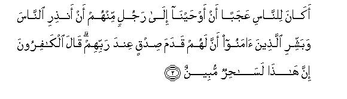
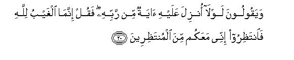
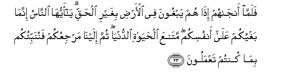
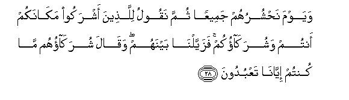
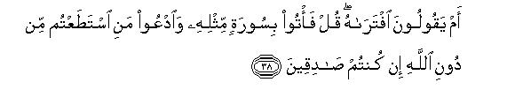
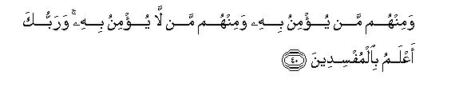
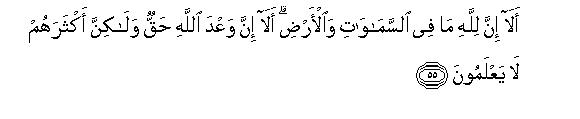
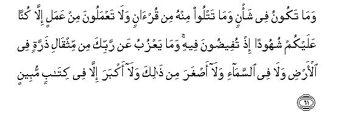

بسم الله الرحمن الرحيم
Sayyid Abul Ala Maududi - Tafhim al-Qur'an - The Meaning of the Qur'an
 10.
Surah Yunus (Jonah)
10.
Surah Yunus (Jonah)
The Surah takes its name from V. 98, in which there is a reference to Prophet Yunus (Jonah). The name, as usual, is symbolical and does not indicate that the Surah deals with the story of Prophet Jonah.
We learn from traditions, and this is supported by the contents of the Surah itself, that the whole of this Surah was revealed at Makkah. But there are some people who are of the opinion, that some of its verses were revealed at Al-Madinah. This is, however, a superficial view. The continuity of the theme clearly shows that this does not comprise isolated verses or discourses that were revealed at different times and on different occasions. On the contrary, it is, from the beginning to the end, a closely connected discourse which must have been revealed at one sitting. Besides this, the nature of its theme is itself a clear proof that the Surah belongs to the Makkan period.
We have no tradition in regard to the time of it's revelation, but its subject matter gives clear indication that it must have been revealed during the last stage of the Holy Prophet's residence at Makkah. For the mode of the discourse suggests that at the time of its revelation, the antagonism of the opponents of the Message had become so intense that they could not tolerate even the presence of the Holy Prophet and his followers among themselves, and that things had come to such a pass as to leave no hope that they would ever understand and accept the Message of the Prophet. This indicates that the last stage of the Prophet's life among thee people had come, and the final warning like the one in this Surah had to be given. These characteristics of the discourse are clear proof that it was revealed during the last stage of the Movement at Makkah.
Another thing that determines more specifically the order of the Surahs of the last stage at Makkah is the mention (or absence) of some open or covert hint about Hijrat (Emigration) from Makkah. As this Surah does not contain any hint whatsoever about this, it is a proof that it preceded those surahs which contain it.
Now that we have specified the time of its revelation, there is no need of repeating its historical background because that has already been stated in Surahs VI and VII.
This discourse deals with the invitation to the Message, admonition and warning. In the very introductory verses, the invitation has been extended like this:-
"The people consider it a strange thing that this Message is being conveyed by a human being and charge him with sorcery, whereas there is nothing strange in it nor has it any connection with sorcery or sooth saying. It simply informs you of two realities. First, Allah, Who has created the universe and manages it, is, in fact, your Master and Lord, and He alone is entitled to your worship. The second reality is that after the life in this world, there will be another life in the Next World, where you shall have to render full account of the life of this world and be rewarded or punished according to whether you adopted the righteous attitude as required by Him after acknowledging Him as your Masters or acted against His will. Both of these realities, which the Messenger is presenting before you, are "realities" in themselves whether you acknowledge them as such or not. He is inviting you to accept these and regulate your lives in accordance with them; if you accept these, you will have a very blessed end; otherwise join shall meet with evil consequences."
After the introduction, the following topics have been dealt with in an appropriate order:-
Proofs of the doctrines of Tauhid, Providence and Life-after-death have been given by such arguments as may satisfy the minds and hearts of those who listen to the Message without prejudice and bigotry with the sole intention of safeguarding themselves against deviation and its evil results and not for the sake of seeking opportunities for useless discussions.
Those misunderstandings which were (and always are) hindering people from accepting the doctrines of Tauhid and the Hereafter, have been removed and they have been warned to guard against those negligences that stand in their way.
Those doubts have been removed and answers to those objections given which were being raised about the Prophethood of Muhammad (Allah's peace be upon him) and the Message brought by him.
Graphic descriptions of the life in the Hereafter have been presented in order to warn the people beforehand so that they should mend their ways here and be not sorry afterwards for their conduct in this world.
They have been admonished and warned that the life in this world is really a test and a trial, and that the time allowed for it is only up to the last moment of the earthly life, and that this is the only opportunity that shall be given to them for accepting the Message and achieving success in the test. Therefore, they should make the best use of the opportunity that has been provided for them by the appointment of Prophet Muhammad (Allah's peace be upon him) for their guidance and obtain the true knowledge of the Reality from the Quran that is being sent down to him. Otherwise, they shall be remorseful for ever and ever.
Their attention has been drawn to some of their acts of manifest ignorance and deviation which were the direct result of discarding Divine Guidance from their lives.
In this connection, the story of Prophet Noah has been related in brief and that of Prophet Moses in detail in order to impress four things on the minds :-
First, "As your behavior towards Prophet Muhammad (Allah's peace be upon him) is like that of the peoples of Prophet Noah and Prophet Moses towards them, you should know it for certain that you also shall meet with the same consequences which they met with." Secondly, "You should not be deluded into believing by the helpless and weak condition of the Prophet and his followers, you are witnessing today, that it will always remain like this. You should know that the same All-Powerful Allah Who supported Prophets Moses and Aaron, is supporting them and that He changes the circumstances in such a sudden and thorough manner that none can foresee it." Thirdly, "If you do not make use of the term that has been granted to you by Allah and mend your ways now, and postpone this to the last moment like followers of th Holy Prophet have been reassured that they should not lose heart because of the severity of the circumstances created by their opponents, especially at the time when they themselves were in an utterly helpless condition. They have also been given instructions as to how they should carry on their Mission under those harsh conditions. Moreover,they have been warned to be on their guard against the kind of behavior which was adopted by the Israelites, when they were rescued by Allah from the tyranny of the People of Pharaoh.
At the end of the Surah, the Holy Prophet has been commanded to make a declaration to this effect: "This is the Creed and this is the rule of conduct that has been prescribed for me by Allah: no change can be made at all in this: whoso will accept this will do so for his own good and whoso will reject this will do so at his own peril."

In the name of Allah, the Compassionate, the Merciful.
[1] Alif Lam Ra. These are the verses of the Book, which is full of wisdom and knowledge.1

[2] "Did it seem strange to the people that We should have inspired a man from among themselves to warn the (neglectful) people, and to give the Believers the good news that they will have real honor and success with their Lord?2 (Is this the thing that) led the unbelievers to say, "This man is a manifest enchanter?"3
[3] The fact is that your Lord is the same Allah Who created the heavens and the earth in six days, then sat Himself upon the Throne of His Kingdom, and is directing the affairs of the universe.4 None can intercede with Him except after His permissions5 That is Allah, your Lord: so worship Him.6 Will you not then understand?7
[4] To Him you shall all return:8 this is the true and sure promise of Allah. Indeed He originates creation and He will bring it back to life9 so that He may recompense with perfect justice those who believed and did righteous deeds. As for those who disbelieved, they shall drink boiling water and undergo a painful chastisement for their rejection of the Truth.10
[5-6] It is He Who gave the sun his brightness and the moon her light, and ordained her phases precisely so that you may calculate years and dates from this. Allah has not created all this (for mere fun) but for a serious end. He makes His Signs manifest for those people who possess knowledge. In the alternation of the night and day and in all that Allah has created in the heavens and the earth, surely there are Signs for those who intend avoiding (deviation from the Truth)11
[7-8] The fact is that the ultimate abode of those, who expect not to meet Us and are well pleased and satisfied with this worldly life and pay no heed to Our Signs, shall be Hell in consequence of the evils they earned (because of this erroneous creed and wrong conduct.)12
[9-10] And it is also a fact that, because of their faith, Allah will guide aright those who believe (sincerely in the Truths that have been presented in this Book) and do righteous deeds; and canals will be flowing underneath there in the Gardens of bliss.13 Therein their prayers will be. "Glory to Thee, O Lord," and their greeting, "Peace be to you," and the burden of their hymn will be, "Praise is for Allah alone, the Lord of the universe."14
[11-14] Had Allah15 hastened in dealing out evil to people as they hastened in asking good of the world, the term allowed to them for action would have been terminated long before this. (But this is not Our Way:) We let wander in their rebellion those people who do not expect to meet Us. Strange is the behavior of man! When he is in affliction, he calls Us, standing or sitting or lying down, but when We remove his .affliction from him, he behaves as if he had never called Us at the time when affliction came upon him. Thus the evil deeds of such transgressors have been made seeming fair to them. O mankind, We destroyed before you those communities16 (which were in power in their time,) when they adopted the attitude of transgression,17 for their Messengers came to them with clear signs but they would not believe in them. This is how We recompense the criminals for their crimes. Now We have appointed you in their place on the earth so that We may test how you conduct yourselves.18
[15-17] When Our clear revelations are recited to them, those who do not expect to meet Us say, "Bring another Qur'an in its stead or make some amendment in it."19 O Muhammad, say to them, "It is not for me to make any alteration in it of my own accord. I follow only what is revealed to me. Indeed, if I disobey my Lord, I fear the chastisement of a dreadful Day."20 Say also, "Had Allah willed so, I would never have recited this Qur'an to you, nor would I have told you anything (about its existence). I have already lived a lifetime among you before its revelation. Do you not use your common-sense?21 And Who can be a greater sinner than the one who himself forges a lie and then ascribes it to Allah or falsifies22 His real Revelations? Indeed, criminals can never attain (true) success."23
[18] These people worship besides Allah those which can neither harm nor benefit them, and say, "These are our intercessors with Allah." O Muhammad, say to them, "Do you presume to inform Allah of that thing which He knows not to be either in the heavens or in the earth ?"24 He is absolutely free from and exalted above what they associate with Him.
[19] In the beginning all the people were one community, but afterwards they invented different creeds and ways.25 And had not your Lord ordained a decree, that thing in which they differ would have been resolved.26

[20] As regards their saying, "Why has not a Sign been sent down to this Prophet from his Lord?"27 tell them, "The unseen belongs wholly and solely to Allah. Well, wait (for it): I, too shall wait with you."28




[21-28] This is how people behave: No sooner do We show mercy to them after some calamity had afflicted them than they begin to practice deceptions29 concerning Our Signs. Say to them, "Allah is more swift in His plans than you: indeed His angels are keeping a full record of your acts of deception.30 It is Allah Who enables you to travel over land and by sea. So you set sails in ships, rejoicing over a fair breeze. Then all of a sudden a strong wind begins to rage against the passengers and billows begin to surge upon them from every side and they realize that they have been encircled by the tempest. At that time they pray to Allah with sincere faith, saying, "If You deliver us from this peril, we will become Your grateful servants."31 But when He delivers them, the same people begin to rebel in the land against the Truth. O people, this rebellion of yours is harmful only to yourselves. (You may enjoy) the transitory pleasures of this world, then you have to return to Us: then We will let you know what you have been doing. This worldly life (which has so enamored you that you have become neglectful of Our Signs) may be likened to the produce of the earth: We sent rain-water from the sky, and the crops of which man and animals eat, grew up luxuriantly. Then at that very time, when the land was at its best, and the crops had ripened and decked out and the owners were presuming that they would be able to benefit from them, Our Command came all of a sudden by night or by day, and We destroyed it so thoroughly as though nothing had existed there the previous day.31a Thus We expound Our Signs in detail for the consideration of those people who are thoughtful. (You are being deluded by this transitory life,) and Allah invites you to the Abode of Peace.32 (Guidance is in His power,) and He guides to the Right Way whomsoever He pleases. Those who have done excellent works will get excellent rewards, and even more than their merits:33 neither gloom nor disgrace shall cover their faces. They deserve the Garden, where they will abide for ever. And those who have earned evil deeds shall have their recompense according to the evil they earned:34 disgrace shall set over them: there shall be none to protect them from Allah: their faces shall be covered with such gloom35 as if the black veils of the night had fallen over them: they deserve Hell, wherein they shall abide for ever. On the Day We will muster them together (in Our Court,) We will say to those who committed shirk, "Stay where you are, you and those whom you set as partners with Us." Then We will remove the state of strangeness from among them,36 and the partners they had set up will say, "You did not worship us."
[29-33] “Allah suffices as a witness between you and us and (even if you worshiped us) we were utterly unaware of your worship”37 At that time everyone will taste of what he ,did. All shall be brought back to Allah, their real Lord, and all the lies they had invented would vanish from them.
Ask them "Who provides for you from the heavens and the earth? Who has power over the faculties of hearing and sight? Who brings forth the living from the dead and the dead from the living? Who directs the system of the universe?" They will surely reply, "Allah". Say "Will you not, then, refrain from (going against the Truth)?" The same Allah is your true Lord:38 then, what remains there after the Truth except deviation? Well, whither are you being turned away?"39 O Prophet, behold! thus has the Word of your Lord come true in regard to the evil-doers that they would not believe.40
[34] Ask them "Is there any of the partners you have set up with Allah who originates creation and then brings it back again?41 Say: "It is Allah Who originates creation and brings it back again. How then are you being perverted to the wrong ways of shirk?"42

[35] Ask them, "Is there any of the partners you have set up with Allah, who guides to the Truth?"43 Say: "It is Allah alone Who guides to the Truth." Very well, then tell: "Who is more worthy to be followed: He Who guides to the Truth or the one who cannot guide unless he himself be guided? What has then gone wrong with you that you make perverted judgments?"
[36] The fact is that most of them are following mere conjecture,44 as whereas conjecture cannot in any way fulfill the requirements of the true knowledge. Allah has full knowledge of what they are doing.
[37] And this Qur'an is not a thing that could be composed without Allah's Revelation: nay, it is the confirmation of what was revealed before it, and full explanation of `the Book'.45 There is no doubt about this that it is from the Lord of the universe.


[38-41] Do they say that the Prophet has composed it himself? Tell them,. "If what you say be true, then produce one surah like this and you may call to your assistance anyone you can other than Allah."46 The fact is that they have denied (on mere conjecture) what was not within the reach of their knowledge nor had they, as yet, tasted its consequences.47 Likewise, the people who went before them declared as false the Revelations, but behold, what was the end of those unjust people! Some of these people will believe in it and others will not, and your Lord knows these mischief-makers48 very well indeed. If these people declare that you are an impostor say to them "I am responsible for my deeds and you are for yours: you are not accountable for what I do, and I am not for what you do.”49
[42-46] There are many among them who hear what you say: but will you make the deaf listen to you even though they be incapable of understanding it?50 Then there are many others among them who see you: but will you show the way to the blind, even though they be bereft of sight?51 The fact is that Allah does not in any way wrong the people but they wrong themselves.52 (Today these people are intoxicated with the life of this world but) on the Day when Allah will muster them they will feel as if they had stayed (in this world) for only an hour53 or so in order to have acquaintance with one another. (At that time they will realize that) they who disbelieved in their meeting with Allah were losers54 indeed and were not rightly guided. Maybe, We let you witness some of the dire consequences with which We threaten them or raise you to Ourselves before this. Anyway they shall have to return to Us and Allah is a witness to what they are doing.
[47] There is a Messenger for every ummat.55 then, when its Messenger comes a just judgment is passed on its people and they are not wronged in the least.56
[48-52] They ask "When will this threat come to pass ? Tell us if what you say be true. " Say "I have no power to bring benefits or to avert evils from myself: everything depends upon Allah's will.57 Every ummat has its appointed term: when that term expires it is neither delayed nor advanced for them by a single hour."58 Ask them "Have you ever considered this? (What can you do to avert it,) if His scourge comes upon you suddenly by night or by day ? Why is it that the criminals are seeking to hasten it?" What! will you believe in it, when it actually overtakes you?-Do you want to escape from it now, when you yourselves were demanding it? Then it will be said to the transgressors, "Now taste the everlasting torment; what other recompense than this do you expect to get for what you have been earning?"

[53-56] Then they ask, "Is what you say really true ?" Tell them, "Yes by my Lord, it is absolutely true, and you have no power to avert it." And every person who has transgressed would gladly give all the wealth of the earth as ransom, if he possessed it, to redeem himself from the torment. When they will see the torment they will be remorseful in their hearts.59 And the judgment will be passed on them with justice and no wrong will be done to them. Listen! all that is in the heavens and the earth belongs to Allah. Note it well that Allah's word is true, yet most of them know it not. It is He Who ordained life and death, and to Him you shall all return.

[57-60] O mankind, there has come to you the Admonition from your Lord: this is the remedy for the diseases of the heart, and guidance and blessing for those who believe in it. O Prophet, say, "It is the bounty of Allah and His mercy that He has sent this thing: let the people rejoice over it for it is better than what they amass." O Prophet, ask them, "Have you ever considered that you yourselves have made something unlawful and the other lawful out of what60 Allah has given you?"61 Then ask them, "Has Allah allowed you this or do you ascribe a false thing to Him?"62 What treatment do they think Allah will mete out to them who ascribe this false thing to Him on the Day of Resurrection ? Indeed Allah is bountiful to mankind, but most of them are not grateful.63

[61-65] O Prophet, We are witnessing whatever work you may be engaged in and whatever portion you may be reciting from the Qur'an; We are also keeping a watch, O people, over whatever you are doing: for there is not an iota of anything, small or big, in the earth and the heavens that is hidden from your Lord, and everything is on record in the clear Register.64 Listen: those, who are Allah's friends and who believe and fear God, shall have no occasion for fear or sorrow: there is nothing but good news for them in this world and in the Hereafter: Allah's words cannot be changed-this is the greatest success. O Prophet, let not their remarks grieve you, for honor wholly rests with Allah. He is the All-Hearing, the All-Knowing.

[66-67] Note it well that all the dwellers of the heavens and of the earth belong to Allah: and those who invoke, besides Allah, partners (they have set up with Him) follow nothing but surmises and merely indulge in guess-works. It is He Who ordained the night for you to repose in it, and gave to the day its light. Indeed there are Signs in this for those who listen65 (to the Message).

[68-70] They remarked," Allah has taken a son to Himself.66 Allah is All-Pure!67 He is Self-Sufficient: He is the Owner of everything that is in the heavens and the earth.68 Have you any authority for what you say? What! do you ascribe to Allah that of which you have no knowledge? O Prophet, say to them, "Those, who ascribe false things to Allah, can never prosper." Well, they may enjoy the transitory pleasures of this life, but after this they have to return to Us and then we will make them taste a severe torment because of this blasphemy they are committing.
[71-74] Recite69 to them Noah's story, when he said to his people; "O my brethren, if it has become intolerable for you that I should dwell in your midst and preach to you the Revelations of Allah, then (note it well that) I have put my trust in Allah. You may muster all the partners you have set up and come to a united decision about me and consider your scheme well so that no aspect of the matter should remain hidden from you. Then bring that into action against me without giving me any respite.70 If you have turned away from my Message, (I have lost nothing) for I did not demand any reward from you: my reward is with Allah, and I have been commanded to behave like a Muslim, (whether any other does so or not.)" But they disbelieved in him and the result was that We rescued those of them, who were with him in the Ark and made them successors on the earth and drowned those who rejected Our Revelations. So consider the end of those who were warned (but did not believe). After Noah We sent different Messengers to their peoples and they came to them with manifest Signs, but they would not believe in what they had disbelieved before. This is how We set a seal on the hearts of the transgressors.71
[75-82] Then after them We sent Moses and Aaron with Our Signs to Pharaoh and his chiefs.72 But they showed arrogance,73 for they were criminals. So when the Truth came to them from Us, they said, "This is clear sorcery.74 Moses replied, "What, do you call the Truth sorcery, when it has come to you? Is this sorcery? The fact is that sorcerers can never attain true success.75 In reply to this, they said, "Have you come to turn us away from the faith of our forefathers so that you two may dominate over the land?'76 We are not going to believe in what you say." And Pharaoh said (to his people), "Bring every expert sorcerer to me. "- When the sorcerers came, Moses said to them. "Cast down whatever you have to cast." When they cast down their appliances, Moses said to them, "This is sorcery what you have cast down:77 Allah will surely render it in vain for He does not let the plans of mischief-makers succeed. And Allah vindicates the Truth by His Commands, though the guilty ones may dislike it."
[83] (Then behold that) none but a few youths78 from his own people obeyed and followed79 Moses because of the fear of Pharaoh and their own chiefs; for they apprehended that Pharaoh would afflict them with a torment. And the fact is that Pharaoh was mighty in the land: indeed he was one of those who do not hesitate to transgress any limit.80
[84-86] Moses said to his people, "O my people, if you sincerely believe in Allah, put your trust in Him, if you are Muslims. "81 They answered,82 "We have put our trust in Allah: `Our Lord, do not make us a cause of trial83 for the unjust people, and deliver us by Thy mercy from the unbelievers'."
[87] And We inspired Moses and his brother: "Provide some houses for your people in Egypt, and make those houses of yours as qiblah, and establish Salat84 and fill the Believers with hope and courage."85
[88-89] Moses prayed86 and said, "Our Lord, Thou hast bestowed on Pharaoh and his chiefs splendor87 and possessions88 in the worldly life; our Lord, hast Thou done this that they may lead astray the people from Thy Way ? Lord, destroy their wealth and harden their hearts in a manner so that they may not believe till they see the painful torment."89 Allah replied, "The prayer of you both has been granted; so be steadfast and follow not the way of those who have no knowledge.90

[90-92] And We led the children of Israel across the sea. Then Pharaoh and his hosts pursued them with the intention of cruelty and oppression to them until, when he was drowning, he cried, "I have believed that there is no god but the real God in Whom the children of Israel have believed and I am of those who surrender."91 (In answer it was said : ) "Now you believe! Whereas hitherto you had been rebellious and of the mischief-makers. Now We will preserve your dead body92 only to be a sign of warning for the succeeding generations, though there are many people who give no heed to Our Signs."93
[93] We gave an excellent abode94 to the children of Israel and provided them with the best things of life. Then they caused not dissensions among themselves until the knowledge had come to them.95 Surely your Lord will decide between them on the Day of Resurrection concerning that in which they had been differing.
[94-95] If you are in doubt regarding the Guidance We have sent down to you, you may inquire about this from those people who have been reading the Scriptures before you. In fact, it is the very Truth that has come to you from your Lord; so be not of those who doubt and join not those who treat Allah's Revelations as false; otherwise you shall be of the losers.96
[96-98] The fact is that whatsoever Signs are shown to those who have fallen under Allah's decree,97 they will not believe till they see the painful torment. Then, is there any instance of a habitation that, seeing the torment, accepted the faith and that faith profited it? (There is no instance of this) except that of Jonah's people.98 When they believed, We warded off the torment of ignominy from them in this worldly life99 and allowed them to make use of the things of life for a while.100
[99-100] Had your Lord willed (that all the people of the world should be believers), all the dwellers of the earth would have believed in Him101 Will you, then, force the people to become believers?102 No one can believe without Allah's permission,103 and it is the way of Allah that He throws filth on those who do not use their commonsense.104
[101-103] Say to them, "Make a keen observation of all that is in the heavens and the earth." And (the fact is that) the Signs and warnings are of no avail to those who would not believe.105 Now what do they wait for but the evil days that befell the peoples before them? Say to them, "Well, wait and see, I, too, wait with you." Then, (when such a time comes), We deliver Our Messengers and those who believed in them-This is Our Way: We have laid it on Ourselves to deliver the believers.

[104-107] O Prophet say,106 O mankind! if you are still in doubt concerning my Faith, know that I do not worship those whom you worship beside Allah, but I worship that Allah alone, Who has the power to cause your death.107 I have been commanded that I should be of the believers. I have also been bidden: Dedicate yourself sincerely, and exclusively and steadfastly to this Faith108 and be not at all of those who associate other gods with Allah.109 And do not invoke beside Allah any being that can neither do you good nor harm: for if you will do so, you shall be one of the workers of iniquity. If Allah afflicts you with a calamity, there is none to remove it but He Himself. Likewise if He wills to bestow a favor on you, there is none to withhold His bounty. He bestows His bounty on anyone of His servants He wills. And He is Forgiving and Merciful."
[108-109] O Muhammad, tell them, "O mankind! the Truth has come to you from your Lord. Now, whosoever follows the Right way, he does so for his own good, and whosoever goes astray, he does so to bring about his own ruin; and I am not a keeper over you. " And, O Prophet, go on following the Guidance that has been revealed to you; persevere steadfastly till Allah passes His judgment, for He is the best of judges.
1This introductory verse contains a subtle answer to those foolish people who presumed that the discourses, which the Messenger was presenting as the Qur'an, were nothing more than eloquent speeches, poetic lofty thoughts, and some predictions like those of the sooth-sayers. They are being warned that the Qur'an 'is not what they supposed it to be but this is the Book of wisdom, and that if they did not pay due attention to it, they would deprive themselves of wisdom.
2This question has been posed to impress on them that if they considered the matter coolly, they themselves would come to the conclusion that:
(a) there is nothing strange in appointing a man to warn his fellow men of the consequences of neglecting the Message. For it is obvious that a man, and not a Jinn or an angel or any other being, was the proper messenger for human beings.
(b) there is nothing strange in it that the Creator and Lord of mankind should make arrangements for the guidance of erring human beings; nay, it would have been strange if He had made no such arrangements, and
(c) there is nothing strange in this that real honor and success should come to those who accept the guidance and not to those who reject it.
3They dubbed him "enchanter" but did not consider whether the epithet appropriately applied to him or not. It is obvious that the mere fact that he was moving the hearts and influencing the minds of the believers with his eloquence, was not a sufficient proof that he was using magic to achieve this object. And it is not difficult at all to distinguish rhetoric of a Messenger from that of an enchanter for these are quite distinct from each other in their nature, in the objectives for which they are used and in the effect they produce on the lives of the believers. The irresponsible "enchanter" does not care at all whether what he utters is correct, just and righteous because his only object is to influence the hearts of the hearers in order to achieve his own unlawful ends. That is why he does not hesitate at all to utter any false, exaggerated or unjust thing, if it serves his purpose. For his only aim is to produce an emotional effect in order to deceive the people by using an artificially ornamented and exaggerated language rather than to state things of wisdom. As a result of this, his talk is contradictory, imbalanced and unsystematic. As his sole object is self-interest, he abuses his rhetoric for exploitation, or for sowing seeds of discord or for setting one party against the other. Therefore, the "enchanter" fails to produce any high moral effects on the lives of the people or to imbue them with any righteous thoughts or to urge them to noble deeds or to bring about any healthy change in their lives; nay, as a result of his "magic" the people begin to exhibit even worse qualities than they did before.
Thus it is implied that by the application of this criterion, the charge of the unbelievers that. "This man is a manifest enchanter" is refuted, for it means to say to them, "You yourselves are witnessing that the talk of 'this person' is wise, systematic, balanced, right and just. Every word he utters is well-thought out and everything he says is most valuable and precious. His eloquence aims at nothing but reform of the people. There is not the least tinge of personal, family, national or any other worldly interest in his talk. His only intention and desire is to warn the people of the consequences of their negligence and to invite them to the way of their own good. Then consider the effects of his eloquence and you will find that they are quite different from those produced by the rhetoric of the `enchanters'. The lives of all those who have been influenced by him have been so reformed that they have become models of high moral character and excellent conduct. Therefore, you should consider the matter and decide for yourselves whether he is an enchanter or a prophet. "
4This is to impress the fact that after creating the universe, Allah has not cut off connection with it, but has sat Himself upon His Throne and is practically directing and conducting and governing each and every part of it. The foolish people think that after creating the universe, Allah has left it to itself or to others to exploit it as they will. But the Qur'an refutes this and says that Allah Himself is governing the whole of His creation and He has kept all the powers and the reins of government in His own hands and whatever is taking place in each and every part of the universe is happening with His command or permission. In short, He is not only the Creator but also the Ruler, Designer and Supporter of the universe, which is working in accordance with His will. (Please see also E.N.'s 40, 41 of Al-A'araf. )
5This is to emphasize the other side of the matter. He is All-Powerful and there is none who dare make even a recommendation to Him about anything not to speak of interfering with His management of affairs so as to cause any change in His decrees or in the making or marring of anyone's fate. The most one can do is to make a supplication to Him but it all depends on His will to grant or reject it. There is none so powerful in His Kingdom as to have his own way in anything or to get his recommendations through anyhow.
6After stating the bare fact that Allah alone is the Lord, people are being told the kind of conduct that fact' demands from them, that is, "When Allah alone is your Lord, you should worship Him alone. " In this connection, it should also be noted that just as the Arabic word (Rab) implies three things Providence, Supremacy and Sovereignty-likewise the Arabic word ( ibadat) also contains three corresponding implications: (1) worship, (2) servitude and (3) obedience:
(1) As Allah is his sole Providence, man should show his gratitude to Him by worshiping Him alone. He should pray and supplicate to Him and bow his head in reverence to Him and none else.
(2) As Allah is the only Supreme Being, man should behave like His servant and slave and should not adopt the attitude of independence towards Him nor should he subject himself to the mental or practical servitude of anyone else.
(3) As Allah is his sole Sovereign, man should obey His Commands, and follow His Law, and he should neither become his own sovereign nor should he acknowledge anyone else as his sovereign.
7That is, "Will you not then understand the implications of the Reality that has been expounded? Will you not open your eyes and see the misunderstandings which have been misleading you into wrong ways opposed to Reality? Will you persist in them?"
8This is the second basic principle of the teachings of every prophet; "You shall have to return to your Lord and render an account of all you did in this world." The first principle has been stated in the preceding verse: "Allah alone is your Lord: therefore worship Him only.
9This sentence contains both a statement and its proof. The statement is, "Allah will again bring to life all human beings," and the proof is, "This is as easy for Allah as it was to create them first. " The one who acknowledges that Allah has originated all creation (and who can deny this except those atheists who accepted the absurd theory of "Creation without a Creator" merely to get a plea for discarding the religion of the Christian clergy?) cannot consider this as impossible or irrational.
10The reason why Allah will again bring the whole mankind to life is to reward the believers and to punish the disbelievers. After showing that this is possible to raise the dead, it is stated that it is absolutely necessary to fulfill the demands of common-sense and justice, for full justice cannot be done without this. Common-sense and justice demand that those who believe and do righteous deeds should be given their full rewards, and those who disbelieve and reject the Truth and do evil deeds, should be duly punished. As every sensible and just person knows that this demand of justice is not fulfilled in its entirety, and cannot be fulfilled in this world, it is absolutely essential that the whole of mankind should again be brought to life for this purpose. (Please see also E.N. 30, Al-A 'araf and E.N. 105, Hud.)
11This is the third argument in proof of the doctrine of the life in the Hereafter. It is based on Allah's manifestations in the heavens and on the earth. The greatest and most manifest of these are the sun, the moon and the alternation of the night and day, for these are ever present before each and every human being. All these clearly show that the Creator of this great and vast universe is not a child who has made all this for mere fun and will break it up when he is satiated with it. These manifestations of His are a clear proof of the fact that the Creator is All-Wise, for there is a system, a wisdom, a design and a serious object in each and every particle of His creation. These seem, as it were, to say. "When you yourselves learn from the signs and manifestations of His wisdom that He is All Wise, how can you, then, expect that He will not call man to account after granting him common-sense, moral feelings, independent responsibility and authority to exploit His endless resources, and that He will not reward those who make the right use of these and punish those who abuse them?"
Thus, it has become obvious that in vv. 4-6, three arguments have been given in their logical order to present the doctrine of the Hereafter:
(1) The fact of the origination of life in this world is a proof that life in the Next World is also possible.
(2) There must be life in the Hereafter, because it is essential for the recompense of the deeds that one does, and of the use or abuse one makes of the moral responsibilities that have been entrusted to man. Therefore, it is the demand of common-sense and justice that there must be another world in which one should bear the consequences of one's deeds, for this is not possible in this world.
(3) When common-sense and justice demand that there must be life in the Hereafter, this need will surely be satisfied, for the Creator of man and the universe is All-Wise, and it cannot be conceived that the All-Wise will not satisfy the demands of common-sense and justice.
A deep thinking will show that these are the only possible arguments for the proof of the life in the Hereafter and these suffice, too. After this the only thing that might be demanded in this connection is that it should be actually demonstrated before man to convince him that this thing is possible, necessary and demanded by the Wisdom of Allah. But it is obvious that this will not be done in this world for this is for the trial of man and not for recompense, and Allah wills to test whether man believes in the Hereafter without seeing it, merely by his reasoning on the right lines.
Besides this, the words, "He makes His Signs manifest for those people, who possess knowledge" and "...in all that Allah has created... there are Signs for those, who intend avoiding (deviation from the Truth)" are worthy of serious consideration. These words imply this: "Allah has in His wisdom spread such signs in each and every manifestation of His as clearly point to the realities that are hidden behind them; but only those people can reach to those realities, who (a) free themselves from the prejudices of ignorance and acquire knowledge from the sources with which Allah has provided man for this purpose, and (b) have the intention of avoiding wrong ways and following the Right Way."
12This passage also contains both a statement and its proof. The statement is that those who reject the doctrine of the Hereafter shall inevitably go to Hell and its proof is that those who reject or pay no heed to this, commit such evil deeds as deserve nothing less than the fire of Hell. The fact which is supported by the experience of thousands of years, is that those who do not consider themselves responsible and accountable to God in the Hereafter, go astray into wrong ways for lack of any control over themselves, and commit immoralities and fill God's earth with tyranny, chaos and filth and thus merit Hell. This is inevitable. If a man leads his life on the presumption that there is no other life, he will have no fear that he shall have to render a full account of all his deeds in this world. Therefore his sole aim in this life will be to win, by hook or by crook, prosperity, happiness, fame and power in this world. Naturally these materialistic attitudes make people heedless of the Signs of Allah and mislead them into wrong ways that lead to Hell.
The above argument for the doctrine of the Hereafter is in its nature different from the previous three arguments. This is based on the knowledge gained by human experience while the former were based on rational reasoning. Though here only a hint has been given about it, the same has been stated in detail in other places in the Qur'an. This is the argument in brief. Human beings cannot adopt individually or collectively the right attitude towards life unless the doctrine of accountability to God is deeply embedded in their hearts. The fact that human beings begin to behave erroneously, if and when their belief in this doctrine disappears or becomes weak, is borne out by a long experience. Had not the creed of the Hereafter been real, its acceptance or rejection would not have produced the results inevitably and continuously for centuries. The fact that the acceptance of a doctrine should have continuously produced right sort of results, and its denial wrong results, is a clear proof that it is real. Though the premises of the above argument and the conclusion drawn from these arc clear and closely connected, there arc some people who do not agree with this proposition. They argue their point like this. There are many instances of people who deny the Hereafter and base their moral philosophy and their rule of conduct on atheism and materialism: still they possess high moral characters and abstain from every sort of evil; in short, they are virtuous in their affairs and render great services to the people. But a little thinking will show that this is a weak argument. If we probe into the materialistic philosophies and systems, we shall find that all these lack solid foundations for the moral excellence and practical virtuous deeds; therefore they cannot produce those qualities with which the atheists and the materialists are credited. Indeed no such motivating factors exist in those philosophies as may produce the qualities of righteousness, honesty, trust-worthiness, justice, compassion, generosity, sacrifice, sympathy, self-control, purity, the fulfillment of duties, obligations and pledges and the like. The only alternative to the doctrines of Tauhid and the Hereafter is "utilitarianism" which might become the basis for a practical moral system, for all the other philosophies are merely hypothetical and impracticable. It is quite obvious that the motivating power of utilitarianism is very limited because it is incapable of carrying a person farther than "utility" itself. Therefore the one who believes in this doctrine will consider a virtue a "virtue" only as long as it is useful to his own person, family, society etc., and will direct all his efforts towards promoting their welfare and happiness and will adhere to moral qualities only as long as they are conducive to his own good or to that of his own people. But he will discard these "virtues", when he is convinced that these will be harmful. That is why a utilitarian does not believe in absolute morality but adopts truth or falsehood, honesty or dishonesty, faithfulness or treachery, justice or injustice, in short, any virtue or vice that may suit the occasion and be useful for his own interests. The English people are the most appropriate example of utilitarian morality. Their example will serve our purpose as they are cited by its supporters to prove their proposition that one may possess a high moral character even though one were to deny the existence of God and the Hereafter for, they say, the English people in general are more truthful, more honest, more just and more trust-worthy than others though they arc materialists; whereas the fact is that the English people provide the most appropriate practical proof of the instability of utilitarian character. Is it not a fact that the representatives of the English nation make a very poor show of their morality in regard to international affairs? They tell brazen-faced lies and are guilty of treachery, tyranny, injustice and dishonesty, and the whole nation backs them up as its champions. Had their morality been founded on sound basis, it could not have been possible that as individuals they should be truthful, honest, just, righteous and observe pledges, but as a nation they would discard all these moral values. This is a clear proof that these people do not believe in moral values as such but only if these are useful for their self-interest: otherwise they could not have adopted two contradictory positions as individuals and as a nation. Morality is morality only if it is absolute, otherwise it is a policy and expediency.
Nevertheless, if there be any up-holders of absolute morality from among the disbelievers of Allah and the Hereafter, they could not have got these virtues from the doctrine of utilitarianism but from those latent religious influences that might have remained embedded in their hearts without their conscious knowledge. Such a person is, in fact, indebted to religion for his moral excellences, though he be attributing these to secularism and materialism, for he cannot point out anything, whatsoever, in them that might have motivated those virtues.
13We should not pass cursorily over this verse and should consider it deeply in the order it has been presented:
(1) Why will they be given Gardens of bliss in the life of the Hereafter? This will be because they followed the Right Way in the life of this world and adopted the right ways in every aspect of life, both as individuals and as a community, and discarded the false and erroneous ways.
(2) How did they obtain at every step, at every turning and at every crossroad the correct criterion of judging between the right and the wrong, the true and the false, the righteous and the erroneous? Then from where did they get the power to remain stead-fast on the Right Way, avoiding scrupulously wrong ways, after getting the right sort of discernment? It was their Lord Who is the real source of everything, Who gave them the guidance and the power of doing good works on every critical occasion.
(3) Why did their Lord give them that guidance and power? He gave them these things because of their Faith.
(4) What is that characteristic of the Faith which produces the above results ? The Faith which produces those results does not comprise mere profession but it is that Faith which becomes the moving spirit of one's conduct and character and has the power of reforming one's morals and deeds.
In order to illustrate this point, let us consider, in the physical life of man, the case of food that is consumed for nourishment, health, energy and happiness. It is obvious that these results cannot be produced by the mere taking in of any food, but by that "food" which is so digested as turns into blood and circulates into every vein to provide energy to every part of the body for its proper functioning. In the same way, in the moral life, guidance, righteous attitude and pure conduct and true success, depend on those right creeds that get deeply embedded in the mind, heart and soul. Otherwise, creeds which are merely professed by the tongue or lie dormant in some corner of the mind and the heart, cannot produce such results, for they cannot influence one's conduct, character, way of thinking and attitude towards life for the better. Just as one may eat food and still not obtain those useful results which arc produced only if it is digested properly according to the physical laws of God, in the same way, one who professes those right creeds merely with his tongue, but does not make them a part of his mind, heart and soul, does not deserve those rewards which are only for those whose deeds correspond to the creeds.
14These facts about the life in Paradise have been stated in order to make conspicuous the high thinking and the noble qualities of the Believers. When they enter Paradise after coming out successful in this worldly test they will manifest the same high qualities of character that they had in this world. Instead of making urgent and immediate demands for beautiful articles of luxury, musical instruments, wine and women, they will sing hymns of praise to their Lord. This also belies that picture of the lift in Paradise that some crooked people have formed of it. The fact is that the noble personalities which the Believers build in this world and the high ways of thinking and the excellent moral characters they form in this world and the great and rigid training they give to their feelings, emotions and desires, will become all the more prominent in the pure surroundings and environments of Paradise. That is why they will love it most to sing hymns of praise to Allah and glorify His name just as they did in this world. Besides this, their greatest wish and desire in Paradise will be peace for one another, as it was in their collective life in this world.
15After the introductory verses (1-10), the Qur'an takes up admonition which is the main subject of the Surah. In order to understand this fully we should keep two things in view as its background:
First, a little before its revelation, the continuous horrible famine, which Had afflicted Makkah for seven long years and humbled the haughty Quraish, had come to an end. Naturally this had given a blow to idol-worship and acted as a stimulus to God-worship: for in their utter helplessness, they had to supplicate to Allah and cry meekly for help. So much so that Abu Sufyan had to approach the Holy Prophet with this request: "Please pray to Allah to remove this affliction from us. But when the famine was over, and rains began to fall, and prosperity returned, they began to show rebellion and do evil deeds and started their hostile activities against the believers. Thus the hearts that had fumed to Allah, again became neglectful of Him. (See XVI: 113, XXIII: 75-77, XLIV: 10-16).
Secondly, the Qur'an answered the question with which they confronted the Holy Prophet whenever he warned them of the consequences of rejecting the Truth. They would say, "You are always threatening us with Allah's wrath; why doesn't the Divine torment visit us and why is it being delayed?"
Keeping the above background in view, vv. 11-12 may be expanded like this: "Allah does not hasten in punishing and seizing the people for their sins as He hastens in showing kindness and compassion to them. Do they, then, want Him to hasten His torment for their rebellions, as He hastened to remove famine in answer to their supplications? As this is not Our Way, We give them time to mend their evil ways in spite of their transgressions and rebellions. We send warning after warning and give them respite until their term comes to an end. Then the law of requital comes into force. In contrast to this, their way is the way of mean and narrow-minded people. When affliction comes, they remember Allah, begin to cry and call Him meekly, but forget it all during the time of prosperity. Such bad ways as these are leading them to Divine torment."
16The Arabic word (qarn ) is commonly used for "the people living during the same period." But from the way the Qur'an has used this word on different occasions, it is evident that by "qarn " is, meant the community which had been invested with power and authority and appointed wholly or partially to the position of leadership of the world. One way in which such a community is destroyed is that it is totally exterminated but there are other forms of its destruction also
17Here the word (zulm) has not been used in its commonly known limited sense, but it covers all sorts of sins that are committed, when people transgress the boundaries of Allah's slavery. (Please refer to E.N. 49 of Al-Baqarah.)
18vv. 13-14 have been pointedly addressed to the Arabs so as to say, "O Prophet of Arabia, learn a lesson from the communities that have passed before you. They were given an opportunity for doing good deeds in their time but instead of this they adopted the attitude of transgression and rebellion and rejected the teachings of the Messengers who had been sent for their guidance. As they failed in Ow test, We dismissed them from leadership. Now, O people of Arabia, yow turn has come and you have replaced them and have got the opportunity for doing the same work under the guidance of Our Prophet Muhammad. You must understand that you are undergoing the same test in which your predecessors have failed. If you do not want to meet with the end they met, you should make the right use of this opportunity by learning a lesson from their end and by avoiding the errors, which became the ultimate cause of their destruction. "
19They implied two things when they said these words. First, they meant that what Muhammad (Allah's peace be upon him) was presenting as Divine Revelation was really the product of his own mind but he was ascribing it to Allah merely to make his claim weighty. Secondly, they implied this: "If you want to be the leader of your people, present something that may make them prosperous in the world and give up the doctrines of Tauhid and the Hereafter and the moral restrictions you are prescribing in yow teaching. And if it be not possible, make some amendments in the Qur'an so that a compromise may be effected between you and us on the principle of give and take so that there should be some scope for ow shirk in yow Tauhid and for our self-worship and for our salvation in the Hereafter, irrespective of what we do in this world. You should also note it well that we cannot accept yow absolute morality: therefore you should make an allowance for ow prejudices, ow rites and customs, ow personal and national interests and ow lusts. We propose that with mutual agreement we should make a list of those religious demands which should be obligatory on us for the fulfillment of Allah's rights, and beyond that we should be free to conduct ow worldly affairs in any way we like. This compromise is necessary because we cannot accept yow demand that human life in all its aspects should entirely be led in accordance with the implications of the doctrines of Tauhid and the Hereafter and the regulations of the Islamic Code of life. "
20This is the answer to the two about-mentioned demands: "I have no authority of making any alterations in this Book for I am not its author but Allah is the One Who is sending it down to me. Therefore there is no question of any compromise about it. If you want to accept its Way, you will have to accept it as it is; otherwise you are free to reject it. "
21This is a very strong argument against their accusation that Muhammad (Allah's peace be upon him) was himself the author of the Qur'an but was ascribing it to Allah, and in support of the Holy Prophet's claim that it was being sent down to him by Allah, Who was its Author. The argument is this: "You yourselves have witnessed the forty years of his life before his appointment to Prophethood. He was born in yow own city and passed his boyhood, youth and middle age before yow very eyes. He lived among you and had all kinds of relations-social, marital, economic, etc. with you. So much so that no aspect of his life was hidden from you. Did you notice anything in his whole life that might show that he could be the author of this Book? Do you not use your commonsense?"
The question posed in the Qur'an implied two things which were well known to everyone in Makkah about the Holy Prophet:
First, during the forty years of his life before Prophethood, he had neither received any education nor training nor sat in any company that should have enabled him to become the author of such a Book as was full of unique things that were unknown to the people around him. No one had ever heard from him anything about the problems that had been dealt with in different Surahs of the Qur'an. So much so that not even a relative or close friend of his had ever noticed anything in his talk or in anything about him that might have shown any signs of gradual development towards it, before he made his great claim to Prophethood when he reached the age of forty. This was a clear proof of the fact that the Qur'an was not the invention of his own brain and that it must have been sent down to him from outside. For it is impossible for a human being to produce anything like this, all of a sudden and without ever manifesting any signs of its evolution and development in his earlier life. That is why when some intelligent people of Makkah felt the absurdity of this accusation, they began to say that it was some other person who taught these things to him. But this was even more absurd than the first thing because they could not point out specifically a single person in the whole of Arabia, not to say of Makkah, who had the ability of producing such unique things as were contained in the Qur'an. They also knew that a person of his high caliber could not have remained obscure in some unknown corner for forty years.
The second thing, that had distinguished him during those forty years of his life, was his noble character both from the negative and from the positive aspects. He was never known to have told a single lie or practiced any kind of deceit, forgery, cunning, craftiness and the like in any way whatsoever, On the other hand, all those people with whom he had come into contact in any capacity bore witness to the fact that he had been truthful, honest, and trustworthy without any blemish whatsoever. As an instance, a most well-known historical fact may be cited. Only five years before his Prophethood, the Ka`abah was damaged by rains. When they were re-building it, a quarrel arose among the different clans of the Quraish as to who should have the honor of setting Hajr-I-Aswad (the Black Stone) in its proper place. Therefore it was agreed that the one who would be the first to enter into the Haram next morning should arbitrate in the quarrel. Next morning the first person who entered the Haram was Muhammad (Allah's peace be upon him). At this all the people cried out with joy, "He is an absolutely trust- worthy man, and we are fully satisfied with him; he is Muhammad. " This is how Allah had made that large gathering of the Quraish bear witness to the fact that he was "The Trustworthy", before appointing him as His Messenger. Therefore there was no justification for anyone to accuse the man who had never told a lie nor ever practiced forgery nor craftiness in his whole life, of ascribing falsely to Allah his own literary creation, and claiming categorically and persistently that it was of ' Divine Origin.
That is why Allah has asked His Messenger to refute their absurd charge by saying, as it were, only this: "O my people, use your commonsense before making this absurd accusation, for I am not a stranger or a foreigner among you. I have lived a life-time of forty years among you before making a claim that I have received Revelation from Allah. How can you expect from my past that I would present the Qur'an to you as Allah's Book, without gaining knowledge from Him and without His Command?" (For further details sec Surah Al-Qasas, E.N. 109).
22That is, "If these Revelations are not from Allah and I myself compose them and present them as Revelations from Him, there can be no greater sinner than I. On the other hand, if these Revelations are truly from Allah and you are falsifying these, then there can be no greater sinner than you. "
23Some foolish people draw wrong and misleading conclusions from this verse, by a fallacious reasoning. They confine the meanings of (falah) to "long lift" or "worldly prosperity" or "worldly success" and argue like this: This verse declares categorically that "criminals can never attain success." The converse of this proposition, that is, "anyone who is successful cannot be a criminal" must also be true. Hence, if a claimant should live a long life after his claim to Prophethood or prosper in the world or his claim receives a good response in the world from the people, he should be acknowledged as a true prophet. For they argue, if he had been a false prophet he could not have "prospered," but would have been killed or starved to death or rendered unsuccessful in his mission, as soon as he had claimed to be a prophet. But even a little thinking will show that this "argument" is fallacious on the face of it. Firstly, the converse of every proposition is not always true. Secondly, the Qur'an does not use the word falah in this limited sense. Thirdly, Allah deals with the criminals according to His Divine Law of respite.
Now let us consider the matter in detail. The words "Indeed the criminals cannot attain success", have not been used, in the context they occur, to prescribe a criterion for judging a true Prophet from a false one, so that if a claimant is "successful", he should be accepted, and if he is not, he should be rejected. As a matter of fact, these words have been put in the mouth of the Messenger to make a declaration like this: "I know it for certain that the criminals cannot attain (true) success: therefore I cannot commit the crime of making a false claim to Prophethood. But as regards you, I am absolutely sure that you cannot attain true success because you are guilty of falsifying me who is a true Prophet of Allah."
The other thing is that the word falah is not used in the limited sense of "worldly success", but it has been used to denote the permanent 'success' which never suffers any loss whatsoever irrespective of the fact whether the claimant gains or does not gain any worldly success in the initial stage. Nay, it is just possible that a false "claimant" who invites people to misguidance should attain great worldly "success" and his misguidance might also prosper. This is, however, not success in the terminology of the Qur'an, but this would be an utter failure. On the other hand, it is also possible that the inviter to the Truth should suffer untold afflictions or fall a prey to the persecutions of the transgressors, and leave this world without winning over anyone to the side of the Truth, but this will be, in the terminology of the Qur'an, true success and not a failure.
The other thing that refutes the fallacy of these foolish people is that they do not take into consideration the "Divine Law of Respite", according to which the mere fact that a false prophet enjoyed a long "prosperous" life is not a proof that he was a true prophet. The Qur'an has made it clear at many places that Allah does not expedite the matter of the punishment of the criminals, but gives them respite to mend their ways; nay, He also lets them loose in their deviation if they abuse that respite and become more corrupt. Sometimes He makes them even more "prosperous" so that they should fully manifest all the evils they had hidden in their hearts and incur full punishment which they really deserve for their evil deeds. The "Divine Law of Respite" takes its due course in the case of false prophets as it does in the case of other criminals. And there is no reason why they should be an exception to this. Satan, the greatest of all criminals, has been allowed to practice every kind of deception up to the Day of Judgment, and there is no mention of any exception to this effect that he will not be allowed to set up a false prophet.
As a last resort, such perverse interpreters of the Qur'an turn to vv. 44-47 of Surah Al-Haqqah: "If Muhammad had fabricated something himself and ascribed that to Us, We would have seized his hand and cut off his heart's vein." But these cannot serve their purpose, for what they imply is only this: "If the true Prophet appointed by Allah were to ascribe any false thing to Allah, he would be seized forthwith" . Therefore it is no more than a fallacy to argue from this to the erroneous conclusion that the impostor who is not seized is a true prophet, for this Divine principle applies only to a true Prophet and not to an impostor. In order to grasp this point, let us take the instance of the government servants. It is obvious that the rules and regulations which are prescribed for government servants apply only to those who are actually government servants and not to impostors. Those who pretend to be government servants are dealt with according to the criminal code like other criminals and villains and not according to the code of employment. Besides this, the context in which these verses occur clearly shows that these are not laying down any criterion of judging whether a claimant is a true Prophet or an impostor. For, in continuation of the preceding verse (43), the passage will, so to say, read like this: "This is the Revelation sent down from the Lord of the universe. If Muhammad had himself fabricated this and ascribed that to Us, We would have........" Moreover, a true Prophet can easily be distinguished from an impostor by his high character, his noble mission and the unique Message he presents. Hence there was no need of setting up such an irrational and unnatural standard of distinguishing a true Prophet from an impostor. "
24This is a fine way of saying that no such intercessors exist as can plead their cases with Allah. For if "something" is not in the knowledge of Allah, it implies that it does not exist at all, for everything that exists anywhere in the heavens and the earth is in His knowledge.
25Please see E.N. 230 of Al-Baqarah and E.N. 24 of Al- An`am.
26The "decree" that. Allah has ordained is that "the Reality" shall be kept hidden from man's senses in order to test whether he recognizes this by using his common-sense, intelligence, conscience and intuition, and if he does not, he shall be allowed to tread the wrong ways he chooses. That is why their differences about the Reality are not being resolved by uncovering it today.
This thing has been stated here to remove a common misunderstanding about the diversity of religions in the world.
At that time, there was a confusion in the minds of the people (and is even today) concerning this. They said, "Different people profess different religions, and the followers of each religion claim that their religion alone is the true one. How may then a seeker after truth judge which one of these is the true religion?" The answer is: "In the beginning all mankind had one religion only, and that was the true religion. Then people strayed away from it and invented different religions of their own with different creeds and ways. Now if you desire that Allah Himself should uncover the Truth and present it to you to enable you to decide which religion is the true one, you should know that this will not be done in this life, because you arc required to decide this by using your commonsense and intelligence. This worldly lift is a trial to sec whether or not you yourselves recognize the Truth by using your common-sense and intelligence."
27That is, "Though they demanded a sign as a proof of the fact that he was a true Prophet and was presenting true Revelations, this was not based on a genuine desire for recognizing and accepting the Truth but was merely a pretext for rejecting it. For they had no intention of molding their habits, their morality, their social system, in short, reforming every aspect of their life in accordance with the implications of the acceptance of the Message of the Prophet. As they did not intend to believe in it, they would say, even after seeing a Sign, that no Sign had been shown to them. Obviously, they would not give up that "freedom" which they were enjoying in following their desires and lusts, by accepting the Unseen (the creeds of Tauhid and the Hereafter), which would bind them to the absolute moral principles."
28That is, "I have presented before you what Allah has sent down to me; but what He has not sent down to me, is "unseen" both for me and for you, and it is entirely with Allah to reveal or not to reveal it. Now if you will not believe unless Allah sends down what He has not sent down, you may wait for it: I, too, shall wait and sec whether your persistent demand is or is not satisfied".
29They practiced deceptions regarding "the Sign of the famine" that had been inflicted on them (vv. 11, 12). This verse alludes to the same, as if to say, "How dart you demand a Sign again, whereas recently the Sign of the famine has been shown to you ? At that time you invoked the help of your deities but in vain, though you had set them up as intercessors with Allah and believed that offerings to their shrines would prove very effective in removing the famine. But you yourselves learned by first hand experience that those so-called gods possessed no power at all. Therefore when you were convinced that all power belongs to Allah alone, you turned to Him and began to invoke His help. This experience ought to have convinced you of the Truth of the Message of Muhammad (Allah's peace be upon him) for this was the very fundamental thing which he was teaching. Instead of learning a lesson from this Sign, you began to practice deceptions to explain it away, as soon as the famine was over and there had come the blessed rainfall. You invented many explanations (deceptions) concerning the causes of the famine and its subsequent end in order to 'escape' from the doctrine of Tauhid and stick to your shirk. The verse is meant to declare that no Sign would convince such people as those who had not benefited from the great Sign of the famine. Therefore there was no use of showing any sign to them.
30"Allah is more swift in His plans than you......" means this: "If you practice deceptions in order to explain away the Sign of the famine so that you might find excuses to evade the implications of its acceptance, in order to continue your rebellious attitudes, Allah is more swift in carrying out His plans to out-do your deceptive methods. He will leave you free to move in your wrong ways: He will even bestow upon you the worldly prosperity, which will so delude you that you will forget that you were being closely watched and will, therefore, commit evil deeds with apparent immunity and enjoy yourselves to your heart's content. But His angels will go on keeping a full and complete record of your deeds, which will be presented for your prosecution after your death."
31The fact that even the most obdurate mushriks and the most hardened atheists who forget Allah when things go well with them, begin to invoke Allah's help when they are pressed hard from all sides and despair of help froth any other quarter, is a clear evidence that there is the All-Powerful Allah Who is controlling each and every thing in the universe. (Please refer to E.N. 29, Al An 'am. )
31aThe parable is meant to warn those who are utterly neglectful of the Life-after-death because of their apparent "success" in this worldly life. They have been likened to the owners of the land who were happy to presume that the crop was ripe and luxuriant and it was within their power to reap it and enjoy the produce of their harvest. They were so sure of this that they began to enjoy the fore-taste of the ripened crops, unaware of the Decree of Allah which destroyed their crops and all their great expectations also. Like-wise those who neglect to make preparations for the life-after-death will find to their sorrow that all they did to earn for the enjoyments of this world was, in relation to the Next World, like the ripe crop that was destroyed all of a sudden.
32That is, "Allah invites to the Way that leads to the Abode of Peace in the Hereafter."
"The Abode of Peace" here means Paradise, where there will be no fear whatsoever of any loss, calamity, sorrow, pain and trouble.
33That is, "Allah by His grace will give to those who did good deeds more than their due reward. "
34That is, "In contrast to the additional rewards to the good people, those who earned evil deeds, shall be punished only in proportion to their crimes." (For further explanation see E.N. 109a of XXVII).
35It shall be that kind of gloom that overspreads the faces of the criminals when they are caught, and they despair all hope of escape.
36Some commentators are of the opinion that the original words of the text mean this: "We will cut off every kind of connection and relation between them so that they are not able to show any concern for one another. " But these meanings are opposed to the Arabic usage, according to which they mean: "We will distinguish them from one another" or "We will cause a distinction among them." That is why these have been translated into English like this: "We will remove the state of strangeness from among them. " That is, the mushriks and their deities shall stand in front of each other and recognize their mutual and respective positions. The mushriks shall come to know the whole truth about those whom they worshiped and their deities will learn everything about their worshipers.
37That is, "Their deities-the angels, the jinns, the spirits, the forefathers, the prophets, the saints, the martyrs and all others-whom they had set up as partners with God and rendered those rights to them which belonged to God alone, will dissociate themselves from their worshipers and declare, "We did not know at all that you worshiped us, for no reverence, no respect, no honor, no admiration, no regard, no adoration, no homage, that you paid to us; no prayer, no supplication, no request, no offering, no gift, you presented to us; and no praise, no prostration, no bowing down, no remembrance, no religious service, or ceremony or ritual you made in our name ever reached us."
38That is, "As you yourselves admit that Allah alone is your real Providence, Owner and Master, He alone is your true Lord, and, therefore, entitled to your servitude and worship. How have you, then, made others as partners with Him?"
39It should be kept in mind that these questions have been posed to the common people: therefore they are not being asked, "Whither are you turning away?" but "Whither are you being turned away?" The passive voice clearly shows that there must be some person (or persons) who was turning away the people from the right direction to the wrong one. That is Why this appeal is being made to the people: "Why are you blindly following those who are misguiding you? Why don't you use your own commonsense? When you yourselves admit the Truth about Allah, why don't you consider the fact that you are being turned away from Him?"
This question has been posed at many places in the Qur'an to bring home the Truth to the common people, but at every place the passive voice has been employed in order to keep back the names of the misguiding ones so that their followers should consider the matter coolly and objectively. This also contains a valuable piece of advice for those engaged in propagation work. By avoiding the names of the misguiding ones, the Qur'an has taken away a very strong weapon from the hands of those, who could otherwise incite the followers that their revered leaders were being made the target of ridicule and criticism.
40That is, "This Word of your Lord has come true that those who have made up their minds that they would not believe in any case would never believe because of their obduracy, even if the Truth were to be presented before them with very plain and clear arguments."
41It is to be noted that the answers to the questions posed in this and the following verse have been put in the mouth of the Holy Prophet in contrast to the answers posed in the preceding verses. This is because the mushriks themselves believed, and therefore could not deny, that Allah originated the creation and that their gods had no share in this. But they would not admit that He could or would bring it back, for they could not in that case reject the doctrine of the Life-after-death, though it was obvious that the One Who originated the creation could also bring it back again and not any one of those who had not originated it. That is why the answer has been put in the mouth of the Holy Prophet that he should declare it openly and boldly that Allah originated the creation and could and would bring it back again.
42This question has been posed to bring home to them the folly of the doctrine of shirk. The argument is this: "When Allah originates the creation and has the power to bring it back again, where do the gods you have set up come in ? If you think a little, you yourselves will realize that there is no room for any one in the universe for any claim or title to your reverence or worship or servitude."
43This is one of the series of questions that have been posed to refute the doctrine of shirk and to establish the doctrine of Tauhid. Besides, it is also meant to focus attention on the importance of the guidance to the Truth, which is one of the greatest human necessities. For it is obvious that the human needs and requirements are not confined to food, clothes and the like necessities of the physical life nor to its protection from losses, distresses, calamities etc. But one of man's needs (nay, his greatest need) is to have the knowledge of the right way of life so that he may, on the whole, achieve success in it. It is obvious that in order to be successful in life, man should have the correct knowledge of the use he should make of and the way he should employ his own physical, mental and spiritual powers and capabilities and natural resources. He should also know the nature and the kind of behavior he should adopt towards other human beings (and as a whole, towards the system of the universe in which he has inevitably to live and work), with whom he comes into contact in different capacities. The Qur'an calls that right way "The Truth" and the guidance that leads to that way, "The Guidance to the Truth".
Now let us turn to the question that has been posed in this verso. The Qur'an asks the mushriks and all those people who reject the teachings of the Holy Prophet: Is there any of the partners and gods you have set up besides Allah, who guides you to the Truth or can do so? Obviously the answer to this will surely be in the negative for neither of the classes of gods is capable of this: First, let us consider this with regard to those gods and goddesses and living or dead human beings, who are worshiped as gods. Though it is true that people turn to them for the fulfillment of their needs or for their protection from calamities in some supernatural way, yet they never turn to them to seek guidance to the Truth nor have they themselves ever sent it nor do their devotees ever claim that their deities teach them the principles of morality, sociology, culture, economics, politics, law, justice and the like.
Then there is the case of those who make rules, regulations and laws which others accept and follow. It is true that such persons are accepted and followed as leaders, but the pertinent question is this: Are they the real guides to the Truth, or are they capable of becoming guides to it? Does any one of them possess the kind of knowledge that comprehends all those truths that are a prerequisite for formulating right principles for the guidance of human life ? Can anyone of them have full vision of the vast field of activities over which the human problems spread? Is there anyone of them who is absolutely free from the weaknesses, prejudices, personal or communal interests, which become hindrances to the formulation of just laws? If the answers to these questions are in the negative (and obviously no one in his senses can answer otherwise), how can then people with such limitations be expected to be the source of guidance to the Truth?
In the light of the above questions, we are able to grasp the signification of the question that has been posed in the Qur'an: "Is there any of the partners you have set up with Allah who can guide you to the Truth ?"
This shows conclusively that Allah alone has the power to satisfy all the human needs and requirements, which may be divided into two categories. First, man stands in need of a providence, a protector, a being to hear and grant his prayers, in short, a permanent support to which he may turn whenever other supports should fail him. The above question inevitably leads to the conclusion that there is no god other than Allah who can fulfill these needs. The other human needs and requirements demand that there should be a guide to lay down such principles for the conduct of human life in its entirety as should be obeyed with perfect confidence and peace of mind. The question posed in v. 35 implies that that "Being" can be none other than Allah. Therefore there remains no argument in support of the point that the principles of culture, morality, and politics should be based on shirk or secularism except that one should persist in obduracy and obstinacy .
44It means that neither the authors of religion, nor philosophers, nor law-makers based their opinions on knowledge but on mere guesswork and conjecture. Likewise, those who followed these religious or worldly leaders did it on the mere assumption that their authors were great people; therefore they must be right. That was why their forefathers and the common people followed them.
45The arguments contained in v. 37 may be elaborated like this:
(1) The Qur'an confirms that which had been revealed before and presents the same fundamental principles and teachings which were taught by the Prophets who came before Muhammad (Allah's peace be upon him). Had he invented the Qur'an, he would have made additions to the truths of the former books in order to make himself conspicuous.
(2) The Qur'an explains in detail and amplifies the fundamental principles and teachings contained in "the Book", that is, the Scriptures brought by the former Prophets, and adds more evidence and explanations to it so that it may be better understood and practiced.
46There is a general misunderstanding that the challenge of the Qur'an to produce (a book, nay,) a Surah like this, is in regard to its eloquent, pure and unique literary excellence. This has been the natural result of the way in which discussions have been carried on to prove the miracle of the Qur'an. But the Qur'an is far above this that it should claim to be a unique and matchless book because of its excellent diction. There is no doubt at all that it is unique and matchless in this respect also, but the real basis of its claim and challenge, that no human brain is capable of producing a book like this, is its subject-matter and teachings. The Qur'an itself has stated at different places those aspects which are a sure proof of its revelation from Allah and the refutation of the false aspersions that it was a human invention. This has already been explained at appropriate places and will be explained in the succeeding pages. (For further explanation see E.N. 26, 27 of LII).
47They could declare the Qur'an as forged on two grounds only but neither of these existed: First, if they had had a proof that the Book had not been revealed by Allah, but had been forged by someone; secondly, that the Truths enunciated in it and the information given in it were false. But no one could say on the basis of true knowledge that the Book had been really forged and then ascribed to God: nor could anyone say that he had peeped behind the curtains of the "unseen" and discovered that there was not One God (as taught in this Book) but many gods in the heavens: nor could anyone assert on the basis of true knowledge that there wen no angels, no Revelations and no God, but these wen mere fictions that had been invented by some fertile imagination: nor had anyone witnessed by actually visiting the "Hereafter" that the information about rewards and punishments was utterly wrong. But in spite of the lack of any proof to the contrary; they were challenging the genuineness of the Qur'an with the boldness and impudence of one who had made a thorough research into the matter and proved it to the hilt.
48Those who do not believe in the Qur'an have been called "mischief makers" because their rejection is not based on any sound reason but on prejudice and selfishness and because it prevents others from believing in it."And your Lord knows them very well" because there is nothing that is hidden from Him. They can deceive the people that they are rejecting the Qur'an because they are convinced that it is not the Book of God, but they cannot deceive Allah that they are doing this with good intentions for he knows that it is because of their mischief. They are obdurate and obstinate and arc suppressing the voice of their consciences and hearts: they deliberately shut their ears and minds against the Truth and prefer their worldly interests their fancies, their lusts and desires to it. That is why they cannot be regarded as "innocent" sinners, but they arc, in fact, the "mischief-makers."
49This is to say, "I don't want to enter into useless discussions and disputes with you on this score. If I am an impostor, I alone shall bear the consequences for it; and if you are rejecting the truth, you are not doing any harm to me but to yourselves alone."
50Though this and the succeeding verse have been addressed to the Holy Prophet, these are meant to reprove those people who were not paying attention to the Message. For they only heard the sounds of the words he spoke to them, just as the animals hear the sound of the words, but pay no attention to understand what is said to them. This was because they were prejudiced against him and had decided before-hand that they would not acknowledge anything, however, reasonable that may be, if it went against the creeds and ways they had inherited, and against their own desires, lusts, and interests. Likewise those people who live like animals hear the sounds of his words, but pay no attention to their meaning for they are not interested in anything other than "eating, drinking and making merry." They are so engaged in and intoxicated with the gratification of their lusts that they never bother to find out whether what they are doing is right or wrong. All such people are deaf to the Message, though they might have ears for other things.
51Here again they may be likened to animals which see with their eyes but cannot perceive anything beyond what appears on the surface. Likewise those people saw the Holy Prophet and his Companions, but did not perceive their pure life for they had not got the mind's eyes to see the wonderful change that was coming in the lives of those who had listened to and accepted the Message.
As has been pointed out in E.N. 50, though these verses were addressed to the Holy Prophet, they were really meant to reprove and admonish the disbelievers in a subtle manner so as to arouse their dormant faculties of hearing and seeing and open these for the reception and acceptance of the rational and sympathetic Message. In order to understand the wisdom of this indirect method of admonition, let us take the example of two righteous friends. One of them who lived among corrupt people did his very best to convey the righteous message both by precept and by practice. He set the model of the highest moral conduct and character before them, and urged them in a sincere and sympathetic manner to consider their own moral condition, and admonished them in a very sincere and rational manner to make them realize that they were living in a very corrupt moral state, and advised them to adopt the right way of life. But none of them would pay any attention to his admonition nor learn any lesson from his pure life. Suppose his friend came there at that time and said: "Why are you giving advice to these deaf people and showing the way to these blind ones, who have no ears for good things and no eyes for the right way ?" It is obvious that these words would not have been uttered by way of dissuading the first friend from doing his reform work but for arousing the dormant faculties of the corrupt people by this subtle indirect method.
52"Allah does not in any way wrong the people" because He gives them ears to hear, eyes to see and hearts to feel and ponder, and everything that is required to enable them to discriminate between right and wrong, truth and falsehood. But it is "they who wrong themselves" by refusing to make the right and proper use of their faculties and by following their lusts and enjoying the things of this world. Naturally this has made their eyes so blind and their ears so deaf and their hearts so dead that they are incapable of distinguishing between right and wrong, good and bad, for their conscience has also become dead.
53That is, "When they will enter the Hereafter and contrast its eternal life with the transitory .life they lived in this world, they will realize that their past life was nothing in comparison with the eternal future life of the Hereafter. Then they will see clearly that it was a big folly to spoil the eternal life for the sake of transitory joys and paltry gains of the world."
54They were losers because they forgot that one Day they would have to present themselves before Allah and as a result of this disbelief committed evil deeds.
55Here the word (ummat) does not merely mean a nation or a community but includes all those people whom the Message of a Messenger reaches after his appointment, even though he be not alive among them. More than this: as long as his teachings remain intact and within the reach of everyone to ascertain what they really are, all such people will be treated and judged as his ummat and their cases decided with justice in accordance with v. 47. According to this standard, all the people of the world are the ummat of Prophet Muhammad (Allah's peace be upon him), and will remain so, as long as the Qur'an continues to be published in its original and complete form as today. That is why it has not been . said, "There is a Messenger in every ummat" but "There is a Messenger for every ummat. "
56That is, when the Message of a Messenger reaches a people, they should know that henceforth they are on trial and that no excuse would be accepted that they were ignorant of it. Then judgment is passed on them with scrupulous justice. Those, who accept the Message and mend their way in accordance with it, are declared to be worthy of Allah's blessings, and those who reject it are doomed to a torment that may be inflicted both in this world and in the next World or only in the Hereafter.
57This is to say, "I never said that I will sit in judgment on you and inflict torment on those who do not believe in me. Therefore, I am not in a position to tell when the threat will be made good. As the threat has been held out by Allah, He will pass His judgment on you when He wills, and in whatever way He wills, for everything depends on His will."
58That is, "Allah passes His judgment on individuals and communities after the expiry of the term that He Himself has set and He alone knows how long it lasts for a community. He is not hasty in giving rewards or punishments. When He sends His Messenger to deliver His Message, He allows sufficient time to each individual and to each community to consider it and ponder over it and mend his (or its) way, during the appointed term. The period of the term may extend to centuries in the case of a community and He knows best how long it should be.
When that term, which is based on justice, expires, and that person or community does not repent of its rebellious conduct, then Allah passes His judgment. When the time of the judgment comes it is neither advanced nor delayed even by a single hour. "
59"They will be remorseful," when all of a sudden, they face the torment on the Day, which they had denied throughout their lives, and on that presumption had gone on doing wrong deeds. Not only this: they will also feel very sorry that they had denied the Messengers and brought baseless charges against them, who had warned them of it. Therefore when they witness it against all their expectations, they will find the ground slipping from under their feet and will feel utterly helpless and guilty in their minds because of the remembrance of their wrong doings and of the pricking of their conscience. In short, their condition will be that of a gambler, who turns a deaf ear to the counsel of his well-wishers and stakes his all on mere speculation and goes bankrupt. But such a person has to blame none but himself only for his sad plight.
60It has been purposely avoided to translate the Arabic word (rizq) into "provisions" for it is liable to create a very serious misunderstanding regarding the implications of this verse. For in this sense rizq will be confined to food and eatables only, whereas it is very comprehensive in its meaning and it covers everything that Allah has given to man-food, children, knowledge, law etc. etc. Instances can be cited from the Qur'an and the Traditions in support thereof. Thus it has become, obvious that according to this verse, in Allah's sight it is wrong and sinful to adopt the attitude of independence towards every kind of rizq, including articles of food.
Thus it has become clear that the consequences of this misunderstanding about the meaning of rizq are far-reaching. As a result of this limited meaning of rizq, it will be sinful only to make the unlawful articles of food lawful and vice versa but it will not be sinful if the people become their own law-makers in regard to the social, economic, political and international matters. It is because of this misunderstanding that even some scholars of the Islamic Law do not consider it sinful if people do not take guidance from the "Shari'at" in regard to matters other than those of food; whereas in this verse, Allah has taken to task all those people, who arrogate to themselves the right of making lawful or unlawful not only the articles of food but anything that has been made lawful or unlawful by the "Shari'at."
61The question has been posed to impress how horrible and rebellious their crime is, as if to say, "How dare you make your own regulations contrary to those which Allah has given you, when, in fact, you yourselves are His creation? What do you think about the servant, who claims that he himself has the right to prescribe the limits concerning the things which his master has entrusted co his care, and therefore, there is no need of consulting him? How will you treat your own servant if he were to claim that he had every right to use and expend as he will all that belongs to you? Leave alone the case of that servant, who does not acknowledge at all that he has any master or that he is a servant and the things that are in his possession arc not his but belong to some one else; for the case under discussion does not concern such a villainous usurper. The question has been posed concerning that servant, who himself acknowledges that he is a servant of some master and that the things in his possession belong to the master and not to himself. Yet he claims that he has the right to make rules and regulations and set limits for himself regarding the use of those things, and that there is no need for him to consult his master.
62This question has been posed to corner the transgressors who arrogate to themselves the right to make rules and regulations in regard to the use they could make of the things of their Master. It is meant to impress on them that they have placed themselves in an awkward position by arrogating that right without any lawful authority. Their claim would have been valid, if the Master had Himself authorized them to make whatever laws they liked concerning the use of the things entrusted to the servants by Him. The pertinent question is whether they possessed any such authority from the Master, or were putting forward this claim without any delegation of such rights to them. If they had any such warrant they should show it: otherwise they would be guilty of two crimes-rebellion and forgery.
63It is a pity that most of the servants are not grateful to the Master for this great favor that He has given them full instructions about the way they should live in His `house' and the use they should make of His things and the conduct they should adopt, as if to say, "If you live in the world according to My instructions, you will win My approval and deserve the greatest rewards, but if you live as rebels, you would incur My wrath and merit a painful chastisement. " Nay, instead of showing gratitude for this favor, many of the servants seem to think like this: "The Master ought to have left us in the world without any guidance and secretly watched us to see which of us was living in rebellion against His Law, and then punished the criminals. " They do not seem to realize that if the Master had put them to this hard test none would have escaped punishment.
64These things have been mentioned here in order to comfort the Holy Prophet and give a warning to his enemies. These are meant to lessen his worry and to strengthen him, as if to say, "We see all that you are doing in propagating the Message of the Truth with great patience and fortitude, and exerting your utmost to reform mankind. Rest assured that We have not left you alone after entrusting you with this arduous duty. We are not unaware of whatever you are doing for the performance of your mission, and also whatever your enemies are doing to oppose you. " On the other hand, a warning has also been administered to his opponents: "Don't remain under the delusion that no one is seeing what you are doing in opposing the Messenger of the Truth and the reformer of mankind? We are seeing whatever mischiefs you are doing and whatever obstacles you are placing in the way of the mission. We arc keeping a detailed and accurate record of all these things. Therefore beware that you shall be called upon to render an account of all your doings."
65This is a concise statement of a very important subject and requires a detailed explanation. The Qur'an declares in a few words that all religions other than the Revealed one are false because they have been founded on there philosophical research for the primary cause of the origin of the universe. The philosophical research is after all based on guess-work, and is in its very nature incapable of reaching the Truth. The right way of arriving at the Truth is to make a study of the signs (e.g. day and night) and of the Message of the Prophets in a dispassionate manner. For this is the only way of discovering the Truth: otherwise, if one follows wrong ways one shall always arrive at wrong conclusions. Let us now consider the several methods that different people have adopted in search of this knowledge:
The mushriks bast their search wholly and solely on superstition.
The hermits and ascetics pretend and claim that they acquire that knowledge by means of contemplation and meditation and see the reality by peeping into the hidden. But the fact is that they do not see the reality; it is only a trick of their own imagination. They form a mental image and then concentrate their mind on it and eventually it takes the shape of the "reality."
The so-called philosophers claim to base their researches on rationalism but it is really only surmise and guess-work, even though they may give "logical" arguments and "sound" reasons in its support.
Then there are the scientists: though they follow the scientific method of research in the physical world, they abandon it completely in regard to their investigation into metaphysics and start to follow conjectures, surmises, and guess-work.
Then these groups invariably suffer from prejudices and are not inclined to understand the point of view of those who differ with them, and, therefore, obstinately stick to their own theories.
In this passage (vv. 66-67) the Qur'an declares that this way of search after knowledge is basically wrong, as if to say, "The real cause of your deviation is that you base your search of Reality on mere surmise and guess-work, and then, because of your prejudices, refuse to listen even to reasonable things. The result is that you have not only failed to arrive at the truth but also to judge rightly the Revealed Religion, presented by the Messengers."
In contrast to the above ways of research, the Qur'an presents its own way and asserts that it alone is the correct, rational and scientific way of arriving at the Truth. It is this: "The prerequisite for research is that you should give up your preconceived prejudices and listen to the Message of those who claim that their information about the Reality is based on "Knowledge" and not on surmises, guess-works, meditations and contemplations, abstract deductions etc. Then consider deeply the Signs in the universe to which the Qur'an invites your attention. If these also point to the Reality they claim to reveal, amen there is no reason why you should deny the Truth taught by those Messengers." This is the basis of the philosophy of Islam. What a pity that even the Muslim philosophers have forsaken this way and followed in the footsteps of Plato and Aristotle!
The Qur'an has inculcated this method at many places and has over and again presented many a phenomenon as a proof of the Reality, and taught the people how to arrive at the right conclusion so as to perceive the Reality. Accordingly, in verse 67, the Sign of the night and the day has been presented for the deep consideration of the people. The change of day and night is a wonderful Sign and clearly points to the Universal Designer and the All-Powerful Ruler; for it takes place by the turning of the earth on its axis and in relation to the sun with mathematical precision. This change is due to the great wisdom of the Designer and has a great purpose behind it because of its innumerable benefits for all that exists on the earth. This points out also to the Providence of the Creator for it demonstrates conclusively that He has made perfect arrangements for the existence of His creation. Moreover, this also shows that the Universal Designer is One and also that He is not playful but Wise and purposeful. This change points also towards the great Reality that He, being the Benefactor and Lord, is worthy of worship and none else. This is because every other being is provided with its requirements by this change of day and night and none provides others; therefore none of them can be the Lord and the Master. In the light of these Signs, how can, any other religion, based on mere surmise and guess-work, be considered to be true when it is compared with the Revealed Religion which is based on such clear Signs as these?
66In the preceding passage people were taken to task for founding false religions on mere surmise and guess-work. In this passage the Christians and others, who believe that God has begotten a son, have been taken to task for this blasphemy which has no authority other than mere presumption.
67The Arabic phrase (subhan-Allah) is used to express astonishment at something apparently inexplicable. But its literal meaning is, "Allah is All-Pure, and is absolutely free from any defect, blemish and flaw". Here it implies both these things. It expresses astonishment at their blasphemy that Allah has taken a son to Himself, and also refutes it, saying, "Allah, being perfect in every way, does not stand in need of a son. "
68Three things have been put forward to refute their blasphemy: (1) Allah is pure and without any defect, (2) Allah is Self-sufficient in every way, and (3) Allah is the Owner of everything in the heavens and the earth. Let us now briefly explain how these three things refute that blasphemy.
It is obvious that a son is either sprung from the loins or is adopted. In the first case, such a conception of Allah amounts to this: He is mortal like every other being: therefore He stands in need of a spouse in order to propagate His offspring like other beings. In the second case, it shall have. to be presumed that Allah stands in need of a son to inherit His Kingdom in order to make up, to some extent, for the deficiency that is caused by His childlessness. Or that Allah also cherished paternal love like human beings, and therefore, adopted as son one of the millions of His slaves.
Whatever be the case, it is obvious that the blasphemy shall have to be based on such a creed which presumes that Allah suffers from many defects, many weaknesses, many shortcomings and many wants. The Qur'an refutes all such blasphemous creeds, saying, "He is All-Pure" and therefore, is free from all such defects; and by "He is Self-sufficient", the Qur'an asserts that He does not suffer from any of those weaknesses and wants which impel the mortals to have children. Lastly, it says clearly that all the beings in the heavens and the earth belong to Him and that He has no particular relation with anyone of them so as to make such a one His "son" or "only son" or heir apparent. Though it is true that Allah loves some of His slaves more than the others because of their excellences, it does not in any way mean that He raises such a one from the rank of a slave to that of a partner in His Godhead. For, the highest rank He bestows on them is that they are Allah's friends, "....who believe and fear Allah, (and therefore they) shall have no occasion for fear and sorrow. There is nothing but good news for them in this world and in the Hereafter. " ( vv. 62-63).
69The story of Prophet Noah has been related here to serve as a warning to those who were rejecting the Message of Prophet Muhammad (Allah's peace be upon him). Up to this place, arguments had been presented before them to show the errors of their creeds, thoughts and ways, and impressive appeals had been made to them to adopt the Right Way. But from here onward they are being warned of the consequences of the attitude they had adopted towards their Messenger and admonished indirectly to learn a lesson from the fate of Prophet Noah's people, who had behaved towards their Prophet like the Quraish, the addressees. The Holy Prophet had been pointing out to them in a very befitting manner their errors and deviations, and was trying to correct them. Hut instead of considering and re-considering these things, they had become his mortal enemies, though he had no self-interest in his Mission and was extending the Message for their good, but they responded to his arguments with rudeness, abuses and stones. So much so that his very person had become intolerable and unbearable for them. This was because of their prejudices against the Right Way, which had so blinded them that they could not tolerate even the presence of the one who was following the Right Way. At this Allah commanded His Messenger to recite to them the story of Prophet Noah so that they might get in it the answer to their misbehavior towards him.
70This was a challenge that amounted to this: "I am not going to give up my Mission at all, whatever you may do against me, for I have my full trust in Allah. " (For contrast please See I. 55 of Hud).
71The transgressors whose hearts are sealed are those obstinate and obdurate people who are so hardened against persuasion that they firmly and perversely adhere to the opinion they have once formed erroneously. As they themselves refuse to listen to counsel and admonition, Allah's curse falls on them and they are deprived of the ability of ever coming to the Right Way.
72Explanatory Notes (84-111) concerning the story of Prophet Moses and Pharaoh, already added to Chapter VII, should be kept in view, as the things explained therein will not be repeated here.
73"They showed arrogance" because of their wealth, power, pomp and show, and considered themselves above subjection to the Message. Therefore they showed haughtiness instead of surrender and obedience to it.
74The story of Prophet Moses and Pharaoh is being related also to serve as an object-lesson for the Quraish, who were behaving towards Prophet Muhammad in the same way as Pharaoh and his people had behaved towards Prophet Moses (Allah's peace be upon them); for the response to the Message by the Quraish was similar to that of Pharaoh's people. (Please refer to v. 2 of this Surah. )
In this connection, it will also be worthwhile to note that the Mission of Prophets Moses and Aaron was not merely to liberate the Israelites from the slavery of Pharaoh, as some people have opined. If we keep in view the context in which the story occurs here, it will be quite clear that they, too, were appointed to pursue the same Mission that was entrusted to all the Prophets from Noah to Muhammad (Allah's peace be upon them all). The theme of this Surah from its very beginning has been this: "Acknowledge Allah alone as your Lord and Deity for He is the Lord of the whole universe. Relieve in the life-after-death in which you shall have to present yourselves before Allah and render the account of all you did in this world. " Then the Surah makes it clear to those who rejected the Message that history bears witness to this that the true success of humanity has always followed the acceptance of this Message. Therefore it admonished them: "You should also accept the Message which has always been put forward by all the Messengers, and establish your life in its entirety on these Articles of Faith. For those who rejected the Message were destroyed in the end. "
Thus it has become quite clear from the context in which their story occurs, that the main object of the Mission of Prophets Moses and Aaron was the same as that of all the other Prophets. It is true that one of their objects was also to liberate the Israelites (a Muslim Community) from the domination of a kafir community, if it persisted in its unbelief. But this had a secondary place in their Mission, and was not its main object. The real object has been stated explicitly in LXXIX, vv. 17-19, wherein his Lord said to Moses: "Go to Pharaoh for he has transgressed the bounds of subjection and say to him, "Are you prepared to reform yourselves and fear your Lord, if I guide you towards Him' ?"
The part played by the two Prophets in liberating the Israelites from Pharaoh's slavery became prominent in history because he and his' nobles rejected the Message and the Prophets had to rescue their people from their slavery. Accordingly, the Qur'an gave it the same prominence as in history. But if one does not commit the error of isolating the details of the Qur'an from its fundamental principles but studies them in the light of these principles, one cannot fall a prey to the misunderstanding that the mere liberation of a community could be the main object of the mission of a Prophet and the propagation of the Message its secondary object only. (For further explanation sec XX: 44-52, XLIII: 46-56, LXXIII : 15-16).
75"......The sorcerers can never attain true success" is meaningful for this is the answer to their charge: "This is a clear sorcery." It means this. "You have called the Signs of Moses a "sorcery" on account of its apparent likeness to it. You have not considered the clear and marked distinctions between the characteristics of the Prophets and sorcerers. Otherwise you would never have dared to make such an absurd charge. Have you ever seen a sorcerer go before a tyrant and talk boldly and fearlessly to him as Moses did, and admonish him for his deviation and invite him to adopt the way of purity and God-worship? You know that a sorcerer behaves quite differently. He starts with the flattery of the courtiers so that they may obtain for him the permission to show his tricks. After this he goes to the presence of "His Majesty" and makes obsequious bows and very humbly requests him to see his tricks. Then he prays for his long life and prosperity and begs for his reward. Now, you can judge for yourselves whether the Prophet is a sorcerer or a far greater and far higher personality than even kings and the like."
76It is obvious that if this demand had been merely for the liberation of the Israelites, there could have been no question of any threat to Pharaoh's kingdom. The threat was because of the Message which demanded subordination to the Truth, for it threatened the system which was based on shirk and on which depended the domination of Pharaoh and his chiefs and priests. (For further explanation see E.N. 66 of VII and E.N. 43 of XL.)
77That is, "What I showed was not sorcery but sorcery is that which you are showing."
78Though literally (Zur-riyyah) means offspring, it has been translated into youths because the Qur'an has used this word here to point out a specific aspect of the matter. It is this: during that fearful period of persecution only a few young men and women showed the moral courage of acknowledging the Messenger of the Truth as their leader and becoming his standard bearers. On the contrary, their fathers, mothers and elders had not the courage to follow him and endanger their worldly interests and even their lives. They not only followed the way of ease and expediency, but also discouraged their youth, saying, "Don't go near Moses: for you will thus invite trouble both for yourselves and your elders."
The Qur'an has mentioned this particular aspect of the matter because the same was the case of the response to the Mission of Prophet Muhammad (Allah's peace be upon him). In its initial stage, those who came forward were not the elders and the old people but some courageous youth. These first Muslims who were boldly facing persecution and enduring hardships for the sake of Islam were the young people. For instance, `Ali-ibn-Abi Talib, Ja`afar Tayyar, Zubair, Talhah, Sa`ad bin Abi Waqqas, Mus`ab bin `Umair, `Abdullah bin Mas'ud, etc., were under twenty years when they embraced Islam. `Abdur-Rahman bin `Auf, Bilal, Suhail were under thirty years, and Abu `Ubaidah-bin-al-Jarrah, Zaid bin Harithah, `Uthman bin `Affan and `Umar Faruq were under thirty-five years. Abu Bakr was no more than 38 when he embraced Islam. Among the early Muslims, there is only one instance of a Companion, `Ammar bin Yasir, who was of the same age as the Holy Prophet and another of `Ubaidah bin Harith Muttalabi, who was older than the Holy Prophet.
79Some people have misinterpreted the Arabic words say that. all the people of Israel were unbelievers and at first only a few of them believed in the Message. But when (iman) is followed by the letter (lam), it generally means obeying and following. Thus the original words of the text will mean (as translated) "----a few youth from his own people obeyed and followed Moses," that is, "Only a few young people from the whole tribe of the Israelites had the courage to accept and acknowledge Prophet Moses as their leader and guide and stand by him in his struggle with Pharaoh and his chiefs." The words that follow make it quite clear that the Israelites refrained from this not because they did not believe in Prophet Moses or his Message but because they (specially their elders) were afraid of exposing themselves to the persecution of Pharaoh. This state of fear was the result of their moral degeneration. Though all of them racially and religiously belonged to the community of Prophets Abraham, Isaac, Jacob and Joseph and, therefore, were Muslims, yet slavery of centuries had so much degraded them that they had lost that spirit of Islam which impels one to become the standard-bearer of Islam against the domination of unbelief and deviation, or imbues one with the courage to stand by the one who had raised that banner.
The Bible has described their degraded condition at the time of the conflict with Pharaoh in Exodus 5: 20-21: "And they met Moses and Aaron, who stood in the way, as they came forth from Pharaoh: And they said unto them, the Lord look upon you, and judge; because ye have made our savior to be abhorred n the eyes of Pharaoh, and in the eyes of his servants, to put a sword in their hand to slay us. " The Talmud (Selections by H. Polano, page 152) confirms the same
"Yea" said the overburdened children of Israel to Moses and Aaron, "We are like a lamb which the wolf has carried from its flock, the shepherd strives to take it from him, but between the two the lamb is pulled to pieces; between ye and Pharaoh will we all be killed. "
The Qur'an also refers to this in VII: 129:
"His people answered, `We were oppressed before you came and now again we are being oppressed after you have come. "
80The Arabic word (musrifin) literally means "transgressors" . As this could not express the true spirit, it has been translated into "....those who are not bound by any limits". They are the people who do not hesitate to employ even the most wicked methods to achieve their object: who practice without any pangs of conscience cruelty, immorality, barbarism etc., if these serve their purpose, and who cross all limits in pursuit of their desires. In short, they are such people as know no limits to stop at."
81The fact that Prophet Moses in his address called his people "Muslims" shows that all the people of the community of Israel were Muslims; otherwise he could not say to them, "-if you arc Muslims" . He meant to urge them to be brave, saying, "If you are true Muslims, as you profess to be, do not fear the might of Pharaoh but put your trust in the might of Allah."
82Those, who responded to the appeal of Prophet Moses, were those "youth" who obeyed and followed him, and not the Israelites, as a community, as is obvious from the context.
83The prayer, "Our Lord, do not make us a cause of trial for the unjust people," is very comprehensive in meaning. Whenever the standard-bearers of the Truth rise up to establish virtue and eradicate the prevalent evil, they come into conflict with unjust people, who, for one reason or the other, are always on the look-out to find fault with them. First, there are the champions of falsehood, who try their level best to crush down with full force the champions of the Truth. Then there are the so-called champions of the Truth who profess to believe in it but are not prepared to enter into conflict with the powerful government of the time. Therefore they declare it to be a useless and foolish effort, and begin to invent excuses to justify the wrong stand they take in regard to the struggle with falsehood in order to silence the prick of conscience they feel for their criminal attitude of cowardice. Accordingly, they try to prove that it is these standard-bearers of the Truth who are in the wrong and not they. Lastly, there are the common people, who watch the conflict as by-standers and join forces with those who prove to be more powerful of the two, whether they are the supporters of the Truth or of falsehood.
Now let us consider how the champions of the Truth are liable to become a cause of trial for these unjust people. If they are crushed down or defeated, the first group declares, "We were in the right and not these foolish people: otherwise they could not have been defeated. " The second group says, "Their defeat has proved that they did not make the correct estimate of the circumstances and caused the destruction of valuable lives by coming in conflict with the mighty powers. Moreover, the Shari`at has not made it obligatory on unto expose ourselves to risk, when we are fulfilling the most essential religious duties without any restrictions from the tyrants of the day." As regards the common people, their criterion of judging the Truth is this: "Whatever triumphs is truth. Therefore their defeat has proved that the champions of the Truth must be in the wrong. " Likewise every mistake and error the champions of the Truth commit, every weakness they show in the face of overwhelming odds against them, every moral fault to which anyone of them succumbs, becomes a good excuse for those who intend to stick to falsehood. Consequently, the "invitation" to the Truth becomes dormant for years after their "defeat".
Thus it has become quite clear that this prayer of the companions of Prophet Moses was well-timed and meaningful: "Our Lord, have mercy upon us so that we might not become a cause of trial for the unjust people: protect us from errors, defects and, weaknesses and make our efforts successful in this world so that we may become a source of goodness to Thy creatures and not a source of evil for the unjust people."
84There is a difference of opinion among the Commentators in regard to the meaning of this verse. As for me, I have considered deeply its wording and the circumstances under which this was sent down, and have come to the conclusion that Prophet Moses was commanded to build or acquire some houses for the establishment of Salat in congregation This was necessitated because the system of Salat in congregation had been abandoned by the Israelites and the Egyptian Muslims as a result of their persecution by the government, and owing to the weakness of their faith. As this had brought about their disintegration and killed their religious spirit, it was essential to re-establish the system of Salat in congregation, which is indeed the first and foremost thing for the revival of that spirit and the integration of a scattered Muslim community and its powers.
As regards " .... appoint your houses as qiblah", I am of the opinion that it means:".... set apart these houses as common places of worship for offering Salat in congregation and the central places for holding their meetings. That is why it is followed by 'and establish Salat'," which means that they should offer their Salat collectively in congregation instead of individually.
85The Arabic word (bashshir) means: "Fill them with hope and courage by giving them the good news of success by the grace of Allah. " And they needed that very badly at that time, for they were full of despair, fear and depression.
86This prayer was offered by Prophet Moses during the last period of his stay in Egypt. There was a long interval between this and the events mentioned in the preceding verse which happened during the early days of his Mission. The details of this intervening period are available at other places in the Qur'an.
87The Arabic word (zinat) includes the magnificence, grandeur, glory and the apparent brilliance of their culture and civilization which attracted other people towards them with the desire of imitating them.
88"Possessions": resources and means which help the people like Pharaoh to put into practice all their devices and plans, and the lack of which prevents the standard-bearers of the Truth from carrying out their plans.
89As it has already been stated, Prophet Moses made this prayer during the last period of his stay in Egypt. When he had shown many Signs, one after the other, to Pharaoh and his chiefs and pointed out the Way clearly to them, but they had persisted obdurately in their antagonism to the Truth, the, Prophet begged his Lord to destroy their possessions and harden their hearts. And this was in accordance with the decree of Allah. As they had merited this punishment according to the Divine Law of retribution, Allah decreed that they should not get the light of Faith, which they themselves had extinguished with their persistent disbelief.
90In this verse, Allah has urged Prophet Moses and his followers to guard against a common misunderstanding that is likely to arise in such cases. It so happens that those people who have no knowledge of the reality and who do not understand the wisdom of Allah's ways are liable to believe from the apparent success of His rebels that perhaps it is His will that they should dominate in the world. When they witness the failures of the upholders of the Truth in their conflict with falsehood in contrast to the splendor and vast possessions of the champions of falsehood, they begin to think that Allah does not will to help the Truth in its conflict with falsehood. Therefore some foolish people further conclude from these wrong suppositions that it is useless to exert for the establishment of the Truth. Then they consider it to be the best and most proper thing to rest content with the little religiosity that the sovereignty of falsehood and unbelief allows them. That is why Allah has urged Prophet Moses and his followers to guard against such a misunderstanding and to carry on the Mission entrusted to them with patience under the adverse circumstances.
91The Bible does not mention this happening but the Talmud says explicitly that when he was drowning he said, "Who is like Thee, O Lord, among the gods?"
92Even today the place, where the dead body of Pharaoh was found floating, is pointed out by the inhabitants of that region. It lies on the western coast of the Sinai Peninsula and is now known by the name of Jabl-i-Fir`aun (Pharaoh's Mount). There is also near it a hot spring called Hammam-i-Fir`aun (Pharaoh's Bath), which is situated at a distance of a few miles from Abu Zenimah, where, they say, Pharaoh's dead body was found lying.
If the Pharaoh who was drowned was Mineptah, who ruled over Egypt when Prophet Moses was sent to him, his embalmed dead body is still lying in the Cairo Museum. When Sir Grafton E. Smith removed the bandages from his mummy, a layer of salt was found on the body, which was a clear proof that he was drowned in the sea.
93That is, "We show Signs to the people over and over again so that these should serve as warnings and be the means of teaching them lessons, but it is a pity that they do not learn lessons even from such Signs as the dead body of Pharaoh."
94That is, "in Palestine after their exodus from Egypt"
95This refers to the dissensions the Israelites had caused in the Divine Way and the new religions they had invented. This verse accuses them of falling into variances, even though they possessed the Divine Knowledge, which had provided them with the criterion of judging between the Right Way and the wrong ways. They did this because of mischiefs of their hearts in spite of the fact that the Right Way had been made clear to them, and its fundamental principles had been imparted to them and instructions had been given about its implications and demands and its boundaries had been distinctly demarcated from those of the ways of unbelief. Besides, they had been admonished to follow the path of obedience and guard against the paths of disobedience, and establish their lives entirely in accordance with the rules and regulations based on that Knowledge, for they shall have to render an account of all they did in this life. But in spite of all the instructions that were given to them, they divided one original Religion into many divergent sects and built different ways on foundations other than those laid down by Allah.
96Though these words were addressed to the Holy Prophet, they were meant for those who expressed doubts about his Message. As regards the reference to the people of the Book, it is because they possessed the Knowledge of the Scriptures, whereas the common people of Arabia lacked this, and were, therefore, strangers to the voice of the Quran. It was also expected that their just and pious scholars would testify that its Message was the same as that of the Scriptures of the former Prophets.
97Allah's decree that had become applicable to them was this: Allah does not thrust the Faith on those who do not seek after the Truth: who obstinately and obdurately shut their hearts against it with prejudice: who are so lost in the love of this world that they do not care at all about the Hereafter.
98Though Prophet Jonah (860-784 B.C.) was an Israelite Prophet, he was sent to 'Iraq for the guidance of the Assyrians, who have been called the people of Jonah for this reason. At that time, Nineveh, a very ancient and famous city, was their capital. Its vast remains are scattered on the left bank of the Tigris, opposite to the city of Mosul, and one of the mounds bears the name of 'Prophet Jonah' . In order to form an estimate of the glory of these people, suffice it to say that the circumference of their capital Nineveh was 60 miles or so.
99As regards the question why the threatened torment was warded off from the people of Jonah as an exception to the Divine principle, "After the decision of the torment, the profession of faith by any community does not benefit it," the Qur'an does not give any details of this, but merely refers to the story at three places. (See XXI: 87, 88; XXXII: 139-148; LXVIII: 48-50). Though the story contained in the Book of Jonah gives some details, these cannot be depended upon because it was neither composed by Prophet Jonah nor it is a Revealed Book but was written by some unknown person and then inserted in the Bible. Besides this, it contains some apparently absurd things which cannot be accepted as true. Nevertheless if we consider this deeply in the light of the allusions made in the Qur'an and details in the Book of Jonah, the explanation given by various commentators of the Qur'an seems to be correct.-Prophet Jonah left the place of his Mission without Divine permission after warning the people of the torment. Therefore Allah forgave the Assyrians, when they repented after seeing some Signs of the coming torment. This was in accordance with the Divine principles as stated in the Qur'an. For, according to one of these, Allah does not inflict any torment on any people, till He has the Message fully demonstrated to them. As the Prophet did not continue his admonition in accordance with the appointed term and left the place of his Mission of his own accord, Allah's justice did not inflict the chastisement because the legal argument against his people had not been fulfilled. (For further explanation see E.N. 85 of XXXVI).
100When the Assyrians believed in the Message, they were given a new lease of life. But after some time, they adopted the wrong ways of thought and deed. Prophet Nahum (720-698 B.C.) warned and admonished them but without any effect. Then Prophet Zephaniah (640-609 B.C.) gave them the last warning that "he .... will destroy Assyria and will make Nineveh a desolation" but it also proved in vain. At last in about 612 B.C., Allah made the Medes dominant over them.
The Median king, with the help of the Babylonians, invaded Assyria, and their army was defeated and was besieged within the walls of Nineveh. They put up a stiff resistance for some time but then the floods in the Tigris swept away the city wall and the invaders swarmed into the city and burnt it to ashes along with the surrounding countryside. The Assyrian king set fire to his palace and was himself burnt to death. Thus the Assyrian Empire and its culture came to an end for ever. The recent archaeological excavations reveal widespread effects of the fire.
101This refers to the freedom that Allah has granted to mankind to believe or not to believe in Him. Otherwise He could have very easily created all the people as born believers and obedient servants and there would have been no disbelief and disobedience at all on the earth. Or He could have very easily inspired them to turn towards belief and obedience. But these methods would have defeated the wisdom that underlies the creation of mankind.
102This does not at all mean that the Holy Prophet desired to force people to become believers, and that Allah was forbidding him to do this. In fact, the Qur'an has here adopted the same method of admonishing the people that it has adopted at many other places, that is, though the words have apparently been addressed to the person of the Holy Prophet, in fact, these have been addressed to the people. The implication is this: "O people! Our Messenger has made the distinction between the Guidance and deviation quite clear and plain by argument and pleading. Now, therefore, it is for you to believe or not to believe in the Guidance. If you accept that some one should force you to adopt the Right Way, you should know that this `duty' has not been assigned to Our Prophet. Had Allah willed this, He could have done it Himself: then there would have been no need of sending any Prophet to you."
103This is to emphasize the principle that the bestowal of all these blessings is in the power of Allah alone: therefore none can acquire or bestow on anyone any blessing without the permission of Allah. As faith and guidance also are blessings, they, too, can be acquired only with Allah's permission; and no one can acquire these without His permission nor bestow these on anyone else even though one should desire to do so. That is why, even if the Prophet had sincerely desired to make people believers forcibly, he could not have done this, for this could be done only with Allah's permission and help.
104This points out clearly that the above principle is not applied blindly and irrationally so as to bestow the blessing of faith on or withhold it from anyone without any rhyme or reason, but it works according to a system which is based on wisdom. Allah bestows this on anyone who uses his common sense properly in starch of the Truth, for Allah provides for such a one the means of attaining it in proportion to the sincerity of his intention and the extent of his exertion and grants him its correct knowledge required for faith. But He throws the filth of ignorance, deviation, wrong thinking and wrong doing on the one who is not a seeker after the Truth and does not seek the Truth and does not use his common-sense properly because of his prejudices, or does not use it at all in search of the Truth. And this is what such people deserve.
105This is the answer to the condition that they would believe him to be a true Prophet, if a Sign would be shown to them. The Holy Prophet has been asked to say to them, "There are countless Signs in the heaven and the earth, which confirm and testify the Message I am giving you. You could have easily recognized them, had you observed and considered them with open eyes and open hearts. But if you lack this urge and desire for the Truth, you will not accept and acknowledge it, however wonderful, miraculous and supernatural the sign may be, for you will declare that it was a piece of sorcery like Pharaoh and his chiefs. The fact is that the people, who suffer from this malady, see the Truth only when the torment with all its horrors overtakes them, just as Pharaoh came to believe only when he was drowning. But you should note it well that the repentance at the time of punishment is of no avail.
106In this concluding portion, the same thing that was stated at the beginning of the discourse, has been reiterated. Therefore it will be worthwhile to keep in view the introductory passage (vv. 1-10).
107The Arabic word literally means "gives you death", but it has been purposely translated into "who has power to cause your death" in order to convey its real spirit in the content it occurs. It implies this: "I worship only that One, who has full power over your life: He has complete authority and power to let you live as long as He wills and cause you to die at any moment He wills. That is why I am fully convinced that I should submit and surrender, worship, serve and obey Him alone."
Now let us consider why of all His characteristics, this quality of Allah was specifically cited here. This was to bring home to the mushriks of Makkah that the doctrine of shirk was absolutely false. For they also believed (and all the mushriks have always believed) that death is entirely in the hands of Allah, the Lord of the universe, and none else has any power over it; so much so that they confessed that even those beings, whom they believed to be partners with God in other qualities and powers of, His, could not avert death even from themselves. Thus the mention of this quality of Allah along with the statement of the Doctrine of Tauhid has been made to serve as a proof of that creed. That is, "I serve Him only for He alone has the full power over life and death. Why should, then, I serve others who have no power at all over their own lives and deaths, not to mention the lives and deaths of others?" The eloquence and force of the statement has been enhanced manifold by saying, ".......Who gives you life and death" instead of ".....Who gives me life and death". For this contains the statement of the Doctrine, its proof and invitation to it, all the three combined in one concise sentence. Had it been said, "...I serve that one Who gives me death," then it would have implied, "I alone should serve Him". But by saying. "......Who gives you death" the implication is: "It is not only I, who should serve Him, but you also should serve Him. For it is absolutely wrong to serve any other than Allah, Who alone has such powers."
108The force of the Arabic words of the text "Dedicate yourself sincerely, exclusively and steadfastly to this Faith", is worth deep consideration. The purpose might have been served by the use of such words as "Adopt this Faith" or "Follow this Faith". But Allah considered such expressions as weak and incapable of serving the real purpose, which is implied in the wording of the Text. For the literal meaning is "Set your face steadfastly", which implies, "You should steadfastly turn your face in one direction only, without turning it even slightly to right or left, or backward, and go on marching in the same direction." Though these words were in themselves quite sufficient, the addition of the word made it all the more forceful. For (Hanif) is one who turns away from all others and exclusively turns to one direction. Thus what Allah demands is this: "Adopt this Faith, this Way of the worship of Allah and this way of life in such a manner that your worship, subjection, submission, servitude and obedience should be dedicated exclusively to Allah, the Lord of the universe, so that you do not deviate in the least after adopting this Way, you should have nothing to do with those ways that you have discarded and that you should not even have a look at the crooked paths that erroneous people follow."
109This negative way of forbidding shirk has been purposely adopted. It implies this: "You should not at all be one of those, who set up in any way whatsoever other gods as partners with Allah in His essence, His attributes, His rights and His powers, whether that god be one's own self or another man or a group of men or some spirit or Jinn or angel or some material or imaginary being." The demand of Tauhid has been made both in the positive form, "Dedicate.... Faith", and in the negative form, "and be not....other gods with Allah. " Thus it forbids shirk both in creed and in deed, in individual and in collective life, in places of worship and in education, in courts and in legislative assemblies in political and in economic activities. Therefore it demands from the worshiper of Tauhid to adopt a different way in every aspect of life from the way of those who adulterate God-worship with ungodly worships, for the former can never be a fellow traveler with those who practice shirk. As such things can never be expected from him, it can never be imagined that he would follow them.
Thus it is clear that it cuts at the very root of shirk, both (Jali) open and (khafi) hidden. As a matter of fact, shirk in its latter form is even more dangerous and should therefore be avoided most scrupulously. This warning is necessary, as some foolish people consider it to be almost harmless just because it is hidden. The fact is that open shirk is like an avowed enemy who makes an attack in the open and hidden shirk is like an enemy in the guise of a friend. Or the former is like a disease of which the symptoms arc quite apparent and the latter like the hidden disease that gradually undermines one's health. Thus it is obvious that when the 'open' shirk comes into conflict with the Faith of Tauhid, it may be cured. But the one who suffers from the `hidden' shirk does not realize the threat posed by it and slowly and gradually succumbs to it, while the victim remains quite unaware that his Faith is being devoured by the deadly secret enemy.